https://docs.oasis-open.org/openc2/imjadn/v1.0/cn02/imjadn-v1.0-cn01.md
(Authoritative)
https://docs.oasis-open.org/openc2/imjadn/v1.0/cn02/imjadn-v1.0-cn01.html
https://docs.oasis-open.org/openc2/imjadn/v1.0/cn02/imjadn-v1.0-cn01.pdf
https://docs.oasis-open.org/openc2/imjadn/v1.0/cnd01/imjadn-v1.0-cnd01.md
(Authoritative)
https://docs.oasis-open.org/openc2/imjadn/v1.0/cnd01/imjadn-v1.0-cnd01.html
https://docs.oasis-open.org/openc2/imjadn/v1.0/cnd01/imjadn-v1.0-cnd01.pdf
https://docs.oasis-open.org/openc2/imjadn/v1.0/imjadn-v1.0.md
(Authoritative)
https://docs.oasis-open.org/openc2/imjadn/v1.0/imjadn-v1.0.html
https://docs.oasis-open.org/openc2/imjadn/v1.0/imjadn-v1.0.pdf
OASIS Open Command and Control (OpenC2) TC
Duncan Sparrell (duncan@sfractal.com), sFractal Consulting LLC
Michael Rosa (mjrosa@nsa.gov), National Security Agency
David Lemire (david.p.lemire@hii.com), HII
David Kemp (d.kemp@cyber.nsa.gov), National Security Agency
This document is related to:
An Information Model (IM) defines the essential content of data used in computing, independently of how it is represented for processing, communication or storage. JSON Abstract Data Notation (JADN) is an information modeling language based on Unified Modeling Language (UML) datatypes designed to both express the meaning of data items at a conceptual level and formally type and validate their essential content. It uses information theory to define logical equivalence, allowing translation of essential content across a wide range of representations without loss. This Committee Note explains how to construct IMs using JADN, represent them in various formats such as formal languages and entity-relationship diagrams, contrast them with other IM languages such as ASN.1, and integrate them with knowledge graphs and concrete data models.
This is a Non-Standards Track Work Product. The patent provisions of the OASIS IPR Policy do not apply.
This document was last revised or approved by the OASIS Open Command and Control (OpenC2) TC on the above date. The level of approval is also listed above. Check the "Latest stage" location noted above for possible later revisions of this document. Any other numbered Versions and other technical work produced by the Technical Committee (TC) are listed at https://www.oasis-open.org/committees/tc_home.php?wg_abbrev=openc2#technical.
TC members should send comments on this document to the TC's email list. Others should send comments to the TC's public comment list, after subscribing to it by following the instructions at the "Send A Comment" button on the TC's web page at https://www.oasis-open.org/committees/openc2/.
When referencing this document the following citation format should be used:
[IM-JADN-v1.0]
Information Modeling with JADN Version 1.0. Edited by David Kemp and David Lemire. 19 November 204. OASIS Committee Note 01. https://docs.oasis-open.org/openc2/imjadn/v1.0/cn01/imjadn-v1.0-cn01.html. Latest stage: https://docs.oasis-open.org/openc2/imjadn/v1.0/imjadn-v1.0.html.
Copyright © OASIS Open 2024. All Rights Reserved.
Distributed under the terms of the OASIS IPR Policy.
The name "OASIS" is a trademark of OASIS, the owner and developer of this specification, and should be used only to refer to the organization and its official outputs.
For complete copyright information please see the full Notices section in Appendix F.
List of Figures
List of Tables
NOTE: The JADN Specification is undergoing revision toward version 2.0 of the JADN language. Specific JADN Specification section references in this Committee Note will be updated once the revised specification structure is stabilized.
This Committee Note (CN) describes the nature of information models and the application of the JSON Abstract Data Notation [JADN Specification] information modeling language in the creation and use of IMs.
Information is what needs to be communicated between applications (i.e., meaning), and data is how that information is represented when communicating (i.e., presentation). Information models are a means to understand and document the essential information content relevant to a system, application, or protocol exchange without regard to how that information is represented in actual implementations. Having a clear view of the information required provides clarity regarding the goals that the eventual implementation must satisfy. This section provides the background for the creation of JADN as an information modeling language for a spectrum of applications.
Internet Engineering Task Force (IETF) RFC 3444, "On the Difference between Information Models and Data Models", says:
The main purpose of an IM is to model managed objects at a conceptual level, independent of any specific implementations or protocols used to transport the data. The degree of specificity (or detail) of the abstractions defined in the IM depends on the modeling needs of its designers. (Section 2)
The terms "conceptual models" and "abstract models", which are often used in the literature, relate to IMs. IMs can be implemented in different ways and mapped on different protocols.
IMs can be defined in an informal way, using natural languages such as English. Alternatively, IMs can be defined using a formal language or a semi-formal structured language. One of the possibilities to formally specify IMs is to use class diagrams of the Unified Modeling Language (UML).
In general, it seems advisable to use object-oriented techniques to describe an IM. In particular, the notions of abstraction and encapsulation, as well as the possibility that object definitions include methods, are considered to be important. (Section 3)
Compared to IMs, DMs define managed objects at a lower level of abstraction. They include implementation- and protocol-specific details, e.g., rules that explain how to map managed objects onto lower-level protocol constructs. (Section 4)
Although RFC 3444 references protocols and object methods, the Unified Modeling Language [UML] places data models and object-oriented programming models in separate categories:
JADN is aligned with UML's layered separation of concerns: the main purpose of an IM is to model data, not managed objects, at both conceptually- and formally-defined levels. This allows IMs to model any kind of data, from simple structures such as value ranges or coordinates, to protocol messages, APIs, and method signatures, to complete documents, without the complexity of also modeling programming languages and techniques. An IM is a declarative specification that defines desired outcomes (data item validity and equivalence) without describing control flow. Protocol models can use IMs to define and validate messages exchanged over the wire.
Because abstraction establishes a correspondence between logical values and concrete representations, information modeling can be used for synthesis starting with conceptual and logical design while leaving representation details for later, or for analysis starting with existing data to find patterns and meaning:
Focusing on meaning encourages interoperability between applications by capturing agreement about what the information conveys and how it can be used, deferring decisions on storage and transmission details until a clear understanding of purpose has been reached.
The IETF, in the Report from the Internet of Things (IoT) Semantic Interoperability (IOTSI) Workshop 2016 [RFC 8477], attributed challenges in achieving interoperability to a lack of information modeling:
One common problem is the lack of an encoding-independent standardization of the information, the so-called information model. Another problem is the strong relationship between data formats and the underlying communication architecture. (Section 1)
[RFC 8477] recapitulates RFC 3444 terminology (Section 2):
- Information Model -- An information model defines an environment at the highest level of abstraction and expresses the desired functionality. Information models can be defined informally (e.g., in prose) or more formally (e.g., Unified Modeling Language (UML), Entity- Relationship Diagrams, etc.). Implementation details are hidden.
- Data Model -- A data model defines concrete data representations at a lower level of abstraction, including implementation- and protocol-specific details. Some examples are SNMP Management Information Base (MIB) modules, World Wide Web Consortium (W3C) Thing Description (TD) Things, YANG modules, Lightweight Machine-to-Machine (LwM2M) Schemas, Open Connectivity Foundation (OCF) Schemas, and so on.
A JADN IM uses UML datatypes to define data, not an environment, and expresses desired effects (meaning of datatype instances), not desired functionality (temporal behavior of methods and protocols). Datatypes can define object state, function signatures, and protocol messages, but imperative specification of methods and protocols is out of scope.
DThaler's IoT Bridge Taxonomy addresses the challenges created when "many organizations develop and implement different schemas for the same kind of things", and concludes:
To ... increase semantic interoperability, it is desirable that different data models for the same type of thing (e.g., light bulbs) are as similar as possible for basic functionality. In an ideal world, data models used by different protocols and organizations would express exactly the same information in ways that are algorithmically translatable by a dynamic schema bridge with no domain-specific knowledge. Sharing data models more widely, and having agreements in principle of at least using the same abstract information model, would be very beneficial.
The notion of "express[ing] exactly the same information in ways that are algorithmically translatable" is a fundamental purpose of information modeling, reflected in JADN's focus on information equivalence.
JADN is based on Information Theory [Info-Theory], which provides a concrete way of quantifying information that is explicitly independent of both semantic meaning and data representation. This may sound paradoxical, but information modeling is based on separating application-specific abstract schemas from application-independent encoding rules. A data format specifies encoding rules used for each core information type, providing an unambiguous bridge between semantics and data. This supports implementation flexibility while maintaining interoperable information exchange across implementations.
A basic problem with discussing information models is that the terms "information" and "data" are used widely but defined imprecisely. The use of these terms across technical literature has considerable variation and overlap. As described in What is Shannon information? [Lombardi], a precise definition of "information" is a relatively recent development:
Nevertheless, it is traditionally agreed that the seminal work for the mathematical view of information is the paper where Claude Shannon (1948) introduces a precise formalism designed to solve certain specific technological problems in communication engineering. ... Nowadays, Shannon’s theory is a basic ingredient of the communication engineers training.
Shannon's original article was later published as a book and gave rise to the field of Information Theory [Shannon].
The [Resource Description Framework (RDF)] defines the concept of lexical-to-value mapping, which provides a precise vocabulary for describing the relationship between "data" and information:
A datatype consists of a lexical space, a value space, and a lexical-to-value mapping.
The lexical-to-value mapping of a datatype is a set of pairs whose first element belongs to the lexical space and the second element belongs to the value space of the datatype.
A small example may help clarify the concept of information. The information content of a logical value can be no greater than the smallest lexical value for which lossless round-trip conversion is possible. For example, an IPv4 address represented in dotted quad format is 17 bytes of JSON string data ("192.168.101.213"), but can be converted to 4 byte [RFC 791] format and back without loss. The information content of an IPv4 address can therefore be no greater than 4 bytes (32 bits), and an information model would define the IPv4 address datatype as a byte sequence of length 4. Expanding the example to include a full RFC 791 IP header illustrates some of the equivalent terms used to describe logical and lexical values:
As with individual IP addresses, the information in an IPv4 header is no greater than the 24 byte RFC 791 lexical value regardless of data format.
Section 2 discusses information vs. data, information modeling, and related concepts in more detail. Section 3.3.2 provides a more detailed illustration of an IM for an IPv4 packet header.
Lexical values are concrete visualizable representations of information, but information itself is an abstract concept that focuses on meaning. As described in [YTLee]'s 2008 paper on information modeling:
The conceptual view is a single, integrated definition of the data within an enterprise that is unbiased toward any single application of data and independent of how the data is physically stored or accessed. It provides a consistent definition of the meanings and interrelationship of the data in order to share, integrate, and manage the data.
The advantage of using an information model is that it can provide sharable, stable, and organized structure of information requirements for the domain context.
Note that while this description uses the term "data", the more important terms are "unbiased", "independent", "consistent", and "meanings and interrelationship".
Lee describes a "quality" IM as being:
JADN's approach to precision and ambiguity is summarized in these key principles:
An information model classifies serialized data with zero false positives and zero false negatives. That is, an information model is the authoritative definition of essential content, and all serialized data is unambiguously one of: a) consistent with the model, b) inconsistent with the model, or c) insignificant.
An application compares logical values in accordance with the UML properties defined by their abstract datatype.
Lexical values are equivalent if they are instances of the same abstract datatype and have the same logical value. If a logical value can be losslessly converted among multiple lexical values then its information content is no greater than the smallest of those values.
Additional quality metrics (completeness, sharability, structure, extensibility, etc.) are discussed in Section 3.
[YTLee] describes an IM language as follows:
"An information modeling language is a formal syntax that allows users to capture data semantics and constraints."
and defines their importance:
"Formal information modeling languages that describe information requirements unambiguously is an enabling technology that facilitates the development of a large scale, networked, computer environment that behaves consistently and correctly."
Report from IoT Semantic Interoperability Workshop 2016 [RFC 8477] describes a lack of consistency across Standards Developing Organizations (SDOs) in defining application layer data, attributing it to the lack of an encoding-independent standardization of the information represented by that data. The JADN information modeling language is intended to address that gap.
JADN is a syntax-independent schema language, based on Unified Modeling Language (UML) datatypes. JADN is designed to work with common Internet data formats (JSON, XML, CBOR), providing a schema to support them. JADN is also graph-oriented to align with the web and database design practices, with options to identify primary and foreign keys, including web URLs.
JADN's native format is structured JSON, and a broad variety of tools exist for creating and manipulating information in JSON format.
Abstract Syntax Notation One [ASN.1] is another example of an abstract schema language. ASN.1 is a formal notation used for describing data transmitted by telecommunications protocols, regardless of language implementation and physical representation of these data, whatever the application, whether complex or very simple. The notation provides a certain number of pre-defined basic types, and makes it possible to define constructed types. Subtyping constraints can be also applied on any ASN.1 type in order to restrict its set of values. Data described in ASN.1 is serialized and deserialized based on set of encoding rules, which are defined for a broad variety of formats including the Basic Encoding Rules (BER) and similar, which are closely associated with ASN.1, as well as less closely tied standards such as XML and JSON.
Other languages have been used for information modeling, although that is not their primary purposes. Some examples are Unified Modeling Language [UML], and Integration DEFinition for information modeling [IDEF1X].
The current version of RDF has two major limitations related to its potential use for information modeling: its lexical space is limited to "a set of strings" and cannot support binary variables or data formats, and its datatypes are limited to primitive "values such as strings, numbers and dates". A future version of RDF could in principle be extended to support full information modeling datatypes, but there is no roadmap indicating plans to do so.
This CN uses the definitions contained in the [JADN Specification], section 1.2.1. The following additional terms are defined for this document:
Classifier: The core organizational concept of UML is the classifier, used to classify different kinds of values according to their features. UML is a complex specification defining many kinds of simple and structured classifiers, but the only kind used by JADN is the simple Datatype. Given a data value, a datatype classifier determines whether the value is an instance of a type, indicating both whether the data is valid, and if so, its logical type(s). Two data values are equivalent if they are instances of the same datatype and their logical values are equal.
Directed Acyclic Graph: A directed acyclic graph
(DAG) is a directed graph with no directed cycles. That is, it consists
of vertices and edges (also called arcs), with each edge directed from
one vertex to another, such that following those directions will never
form a closed loop. A directed graph is a DAG if and only if it can be
topologically ordered, by arranging the vertices as a linear ordering
that is consistent with all edge directions
(Wikipedia, https://en.wikipedia.org/wiki/Directed_acyclic_graph)
Entity Relationship Model: An
entity–relationship model (or ER model) describes interrelated things of
interest in a specific domain of knowledge. A basic ER model is composed
of entity types (which classify the things of interest) and specifies
relationships that can exist between entities (instances of those entity
types).
(Wikipedia, https://en.wikipedia.org/wiki/Entity%E2%80%93relationship_model)
Lexical Mapping: A prescribed relation which
maps from the lexical space of the datatype into its value
space.
[XSD], adapted
Lexical Space: The set of valid literal
representations of a value from the value space for a datatype.
[XSD], adapted
Ontology: (information science) A
representation, formal naming, and definition of the categories,
properties, and relations between the concepts, data, and entities that
substantiate one, many, or all domains of discourse. More simply, an
ontology is a way of showing the properties of a subject area and how
they are related, by defining a set of concepts and categories that
represent the subject.
(Wikipedia, https://en.wikipedia.org/wiki/Ontology_(computer_science))
Schema: (markup languages) A formal
description of data, data types, and data file structures, such as XML
schemas for XML files.
(Wiktionary, https://en.wiktionary.org/wiki/schema#Noun,
definition #3)
Value Space: The set of values for a given
datatype. The value spaces and the values therein are abstractions. Each
value in the value space of a datatype is denoted by one or more
literals in its lexical space. Value spaces have certain
properties (e.g., cardinality, some definition of equality, ordering) by
which individual values within the value space can be compared to one
another.
[XSD], adapted
This section discusses the nature and benefits of IMs, the role of serialization, types of available modeling languages, and tools that can be used in information modeling.
Formally, information is the unexpected data, or entropy, contained in a document. When information is serialized for transmission in a canonical format, the additional data used for purposes such as text conversion, delimiting, and framing contains no information because it is known a priori by the sender(s) and receiver(s). If the serialization is non-canonical, any additional entropy introduced during serialization (e.g., whitespace, leading zeroes, field reordering, case-insensitive capitalization) is discarded on deserialization.
A variable that can take on 2^N different values conveys at most N bits of information. For example, an IPv4 address that can specify 2^32 different addresses is, by definition, a 32 bit value*. But different data may be used to represent that information:
The 13 extra bytes used to format a 4 byte IP address as a dotted quad are useful for display purposes, but provide no information to the receiving application. Field names and enumerated strings selected from a dozen possibilities convey less than four bits of information, while the strings themselves may be half a dozen to hundreds of bytes of data. By distinguishing information from data, information modeling is key to effectively using both binary data formats such as Protobuf and CBOR and text formats such as XML and JSON.
* Note: all references to information assume independent uniformly-distributed values. Non-uniform or correlated data contains less than one byte of information per data byte, but source coding is beyond the scope of this specification.
Modeling in the conceptual > logical > physical sense is a top-down process starting with goals and ending with a physical data model. But in practice "data modeling" is often a bottom-up exercise that begins with a collection of desired data instances and ends with a concrete schema. That bottom-up process could be called data-centric design, in contrast with information-centric design which begins with a set of types that reflect purpose rather than syntax. An information-centric design approach that creates conceptual and logical models can readily be connected with a data-centric design, allowing bottom-up and top-down approaches to meet in the middle. This connects information-centric synthesis and data-centric analysis, as described in Section 1.1.1. However, there are significant process and outcome differences between these approaches, as shown in Table 2-1.
| Data-centric | Information-centric |
|---|---|
| A data definition language defines a specific data storage and exchange format. | An information modeling language expresses application needs in terms of desired effects. |
| Serialization-specific details are built into applications. | Serialization is a communication function like compression and encryption, provided to applications. |
| JSON Schema defines integer as a value constraint on the JSON number type. | Distinct Integer and Number types reflect mathematical properties regardless of data representation. |
| CDDL types: "While arrays and maps are only two representation formats, they are used to specify four loosely-distinguishable styles of composition". | The five compound types are defined unambiguously in terms of composition characteristics. Each type can be represented in multiple data formats. |
| No table composition style exists. | Tables are a fundamental way of organizing information. The Record type holds tabular information that can be represented as either arrays or maps in multiple data formats. |
| Instance equality is defined at the data level. | Instance equality is defined in ways meaningful to applications. For example "Optional" and "Nullable" are different at the data level but applications make no logical distinction between "not present" and "present with null value". Record data values in array and map formats are different at the data level but their information instances can be compared for equality. |
| Data-centric design is often Anglocentric, embedding English-language identifiers in protocol data. | Information-centric design encourages definition of natural-language-agnostic protocols while supporting localized text identifiers within applications. |
Information-centric design promotes consensus when faced with conflicting developer preferences. Because information is the "substance" of a message, separating substance (information) from style (data format) may make it easier to agree on an information model first, deferring debate on data formats. Reverse-engineering an information model from existing data models allows commonalities and incompatibilities to be identified, facilitating convergence across multiple specifications with similar goals.
Information exists in the minds of users (producers and consumers), in the state of applications running on systems, and in the data exchanged among applications. Serialization converts application information into byte sequences (a.k.a. protocol data units, messages, payloads, information exchange packages) that can be validated, communicated and stored. De-serialization parses payloads back into application state. This can also be stated as serialization is the transformation from value space to lexical space, and de-serialization is the inverse transformation. Serialization is not a goal in and of itself, it is the mechanism by which applications exchange information in order to make it available to users. The user cares about the information the serialized data represents, not the format by which it is moved from system to system. An Automated Teller Machine customer cares about their bank balance, and an airline customer cares that their tickets are for the proper flights. How the information system handles the bits to make that happen is of no concern to the customer.
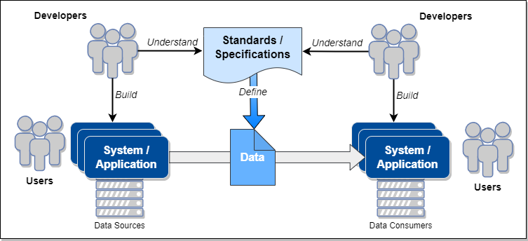
Serialization and deserialization are intimately connected to the chosen format: the same data can be serialized in JSON, CBOR, and XML, and while the serialized data will look very different, the received information that is recovered by deserialization should match the transmitted information.
JADN defines three kinds of information that have alternate representations:
These alternatives can be grouped into distinct serialization styles:
| Style: | Verbose repeated name-value pairs |
Compact element / property names-values |
Concise machine-to-machine optimized |
|---|---|---|---|
| Primitives | Text Representation | Text Representation | Integer / Binary / Base64 |
| Enumerations | String | String | Integer |
| Table Rows | Column Name | Column Position | Column Position |
A data format is a serialization style applied to a data language: "Compact JSON", "Concise JSON", "Compact XML", "Verbose CBOR", etc. The [JADN Specification] include serialization rules for four different formats:
The name "Verbose" here is intended to be descriptive rather than pejorative. An information model allows designers to compare Verbose and Compact styles for usability, and allows data to be validated and successfully round tripped between a readable JSON style and an actually concise CBOR style.
The JADN Specification also describes what is needed to connect JADN and IMs defined in JADN to other serialization formats:
Regardless of format, serialization should be:
Shannon's information theory defines the relationship between information and serialization (coding). Mathematicians characterize conditions applied to a mechanism as necessary and/or sufficient: a serialization that omits necessary data loses information, one that uses more data than sufficient conveys no extra information, and potentially wastes storage or communications bandwidth. However, particular requirements (e.g., human readability) may indicate that a serialization that uses more data than sufficient is appropriate for particular situations.
A primary application of an IM is in the translation of data into and out of in-memory representation and serialized formats for storage and transmission. The IM defines the types, organization, and validation requirements for the information manipulated by an application or protocol. Within an application the IM is instantiated through the data structures and types supported by the chosen programming language. The IM also guides the creation of routines to parse and validate data being input from storage or through communications, and to serialize data being output to storage or transmission.
Two general approaches can be used to implement IM-based protocol specifications:
Translate the IM to a data-format-specific schema language such as XSD, Relax-NG, JSON Schema, Protobuf, or CDDL, then use format-specific serialization and validation libraries to process data in the selected format. Applications use data objects specific to each serialization format.
Use the IM directly as a format-independent schema language, using IM serialization and validation libraries to process data without a separate schema generation step. Applications use the same IM instances regardless of serialization format, making it easy to bridge from one format to another.
Implementations based on serialization-specific code interoperate with those using an IM serialization library, allowing developers to use either approach. Deriving the processing capabilities from the IM ensures consistency as the data is manipulated. Figure 2-2 illustrates the concept of applying an IM to manage the associated data.
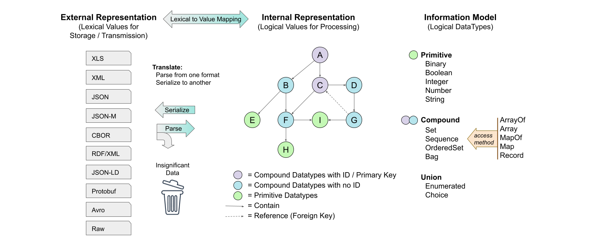
The internal representation, illustrated in Figure 2-1 as a graph, is guided by rules associated with applying the IM:
The [JADN Specification] defines 12 core types, which are described in Section 3.1.2 of this CN. The JADN Specification also defines serialization rules for JSON (with three levels of verbosity) and CBOR [RFC7409]. Supporting a new data format ("external representation") requires defining serialization rules to translate each core type to that data format.
As an example, consider an information element defined as a boolean type, which is the simplest core type. The essential nature of a boolean is that it is limited to only two values, usually identified as "true" and "false". However, the data representing a Boolean value is determined by serialization rules, and could be any of "false" and "true", 0 and 1, "n" and "y", etc. In a programming language, many variable types and values may evaluate as "true":
An abstract representation of an IM does not capture data types and values for a Boolean node, e.g. integer 0 or 37 or string "yes". It has only the characteristics of the node type: false or true. A JSON representation can use a Boolean type with values 'false' and 'true', but for efficient serialization might also use the JSON number type with values 0 and 1.
The value of an IM language multiplies when automated tooling is available to support creation, maintenance, and use of models created in that language. The need for tools is discussed in [RFC 8477], citing particularly the need for code generation and debugging tools. A tool set to support an IM language should provide:
This section provides a brief overview of JADN, and describes the use of JADN in information modeling. The JADN information modeling language was developed against specific objectives:
JADN is a formal description technique that combines type constraints from the Unified Modeling Language (UML) with data abstraction based on information theory and structural organization using results from graph theory.
A JADN information model is a set of type definitions. Each field in a compound type may be associated with another model-defined type, and the set of associations between types forms a directed graph. Each association is either a container or a reference, and the direction of each edge is toward the contained or referenced type.
The container edges of an information model must be acyclic in order to ensure that:
There is no restriction on reference edges, so any container cycles in a model can be broken by converting one or more containers to references.
From UML JADN takes the concept of modeling information/data using Simple Classifiers (see [UML], 10.2 Datatypes) as opposed to the common practice of using Structured Classifiers (UML, 11.4 Classes), which do not define data in a unique way that can be validated and signed. The JADN use of the UML primitive types defined in UML, Table 21.1, can be found in Appendix D.1.
NOTE: the text in this section has been updated to align with in-progress changes toward the JADN v2.0 specification, including terminology changes. In particular, the JADN Specification updates:
- Replace BaseType with CoreType throughout
- Replace Package with Schema as the top-level JADN type
- Replace
info/Informationwithmeta/Metadatain JADN schema packagesThe text and figures in this CN use the JADN v2.0 terminology; this does not reflect alteration of the underlying concepts.
Figure 3-1 provides a high-level view of the components of JADN type definitions that will be described in this section. JADN provides primitive, compound (both structured and unstructured), and union core data types that can be refined using type and field options (field options only apply to compound and union types).
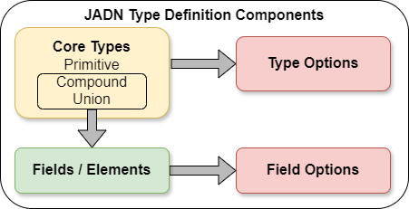
A JADN schema in its native form is a JSON document containing an optional object labeled "meta" and an array labeled "types".
The "meta" object contains metadata about the schema contained in the document, including the types exported from this schema and namespace information to connect it with other JADN schema documents.
The "types" section of the schema document is an array of arrays, with each of the inner arrays defining one type in the schema. Each type in the schema document will use one of JADN's core types and may be either simple or compound. Each type array has five fields, two of which are themselves arrays: one for type options and one for the fields or elements that make up a compound type.
The fields / elements array is always empty in the definition of a primitive type. For structured compound types and union types, each field or element within the fields / elements array is also an array, with three items in an element array and five items in a field array.
These structures are illustrated and explained in more detail in Section 3.1.3.1, Native JSON Representation. JADN can also be represented in multiple formats, both textual and graphical, and automated tooling can transform a JADN model between the different representations without loss of information. The Native JADN representation as JSON data is authoritative, but each representation has advantages. The other representations are described in Section 3.1.3.2, Alternative JSON Representation. The examples that follow in subsequent sections are typically illustrated using both normative JADN (i.e., JSON data) for precision and the JADN Interface Definition Language (JIDL) format for its easy readability.
The [JADN Specification] defines twelve core types:
| Primitive | Compound | Selection / Union |
|---|---|---|
| Binary | Array | Enumerated |
| Boolean | ArrayOf | Choice |
| Integer | Map | |
| Number | MapOf | |
| String | Record |
NOTE: The JADN v1.0 Committee Specification [JADN] uses the term "structured" rather than "compound" when referring to Array, ArrayOf, Map, MapOf, and Record types. An update is planned to change the specification to use "compound" in order to avoid any potential confusion with UML's use of "structured".
Figure 3-2 summarizes the structure of a JADN Type Definition, and identifies values for each of the five elements in the definition. As noted above, a Type Definition is an array; the elements must appear in the order listed here. The five elements are:
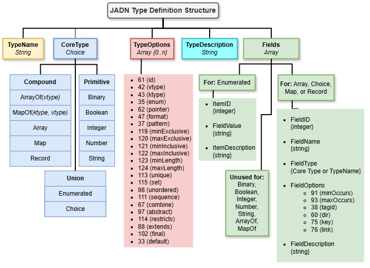
The first two elements of a type definition are the TypeName and CoreType. A firm requirement of JADN is that a TypeName in a schema must not be a JADN predefined (i.e., core) type. There are also name formatting conventions intended to improve the consistency and readability of JADN specifications. These conventions are defined in JADN but can be overridden within a JADN schema if desired (see Section 3.1.2 of the [JADN Specification]):
TypeNames are written in PascalCase or Train-Case (using hyphens) with an initial upper case letter, and are limited to 64 upper case, lower case or numeric characters, or the "system" character (used for tool-generated type definitions).
FieldNames are written in camelCase or snake_case (using underscores) with an initial lower case letter, and are limited to 64 upper case, lower case or numeric characters.
Name space identifiers (nsids) are limited to 8 upper case, lower case or numeric characters and must begin with a letter.
The "system character" (which defaults to
$) is used by JADN processing tools when generating derived
types while processing a JADN model; it is not normally used by JADN
schema authors.
The CoreType must be one of the twelve JADN core types previously identified.
The third element of a JADN type definition is an array of zero or more of the TypeOptions defined in Section 3.2.1 of the [JADN Specification]. JADN includes options for both types (discussed in this section) and fields (discussed in Section 3.1.1.4). As explained in the JADN Specification:
Each option is a text string that may be included in TypeOptions or FieldOptions, encoded as follows:
- The first character is the option ID.
- The remaining characters are the option value.
TypeOptions are classifiers that, along with the CoreType, determine whether data values are instances of the defined type. For example, the pattern TypeOption is used with the String CoreType to define valid instances of that string type using a regular expression conforming to [ECMAScript] grammar.
Table 3-1 lists the complete set of type options, including the option name, type, ID character, and description. Note that the ID characters are the normative form and are used in standard JADN representation (Section 3.1.3.1) when specifying type options. The text labels for the options (e.g., vtype, ktype, pattern) are non-normative and intended to be human friendly. Many of the Type and Field options labels have JSON Schema and XML Schema equivalents.
| Option | Type | ID | Description |
|---|---|---|---|
| id | Boolean | = |
Items and Fields are denoted by FieldID rather than FieldName |
| vtype | String | * |
Value type for ArrayOf and MapOf |
| ktype | String | + |
Key type for MapOf |
| enum | String | # |
Extension: Enumerated type derived from a specified type |
| pointer | String | > |
Extension: Enumerated type pointers derived from a specified type |
| format | String | / |
Semantic validation keyword |
| pattern | String | % |
Regular expression used to validate a String type |
| minf | Number | y |
Minimum real number value |
| maxf | Number | z |
Maximum real number value |
| minv | Integer | { |
Minimum integer value, octet or character count, or element count |
| maxv | Integer | } |
Maximum integer value, octet or character count, or element count |
| unique | Boolean | q |
ArrayOf instance must not contain duplicate values |
| set | Boolean | s |
ArrayOf instance is unordered and unique |
| unordered | Boolean | b |
ArrayOf instance is unordered |
| extend | Boolean | X |
Type is extensible; new Items or Fields may be appended |
| default | String | ! |
Default value |
Detailed explanations of each type option can be found in Sections 3.2.1.1 through 3.2.1.12 of the [JADN Specification]. Table 3-2 summarizes the applicability of type options to JADN core types.
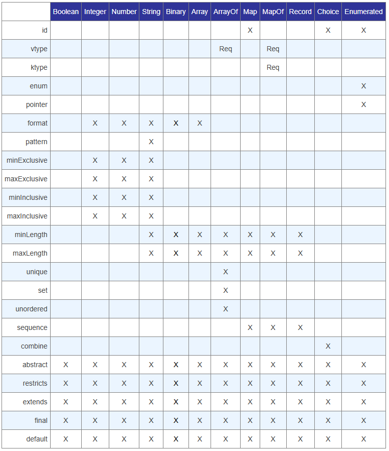
The use of the Fields element to convey Item or Field Definitions is dependent on the CoreType selected, as illustrated in Figure 3-2. The rules pertaining to the Fields array are as follows:
If the CoreType is a Primitive type, ArrayOf, or MapOf, no fields are permitted (i.e., the Fields array must be empty).
If the CoreType is Enumerated, the fields for each item definition in the Fields array are described with three elements:
If the CoreType is Array, Choice, Map, or Record, the fields for each item definition in the Fields array are described with five elements:
The selection of Map or Record for a type definition carries serialization implications, which are discussed in Section 3.1.4.2.
Compound types containing Items or Fields support field options in addition to the type options described in Section 3.1.1.2. JADN defines six field options. As with the type options described in Section 3.1.1.2, the ID characters are normative and used in standard JADN representation (Section 3.1.3.1) when specifying field options. Table 3-3 lists the JADN field options.
| Option | Type | ID | Description | JADN Spec Section |
|---|---|---|---|---|
| minc | Integer | [ |
Minimum cardinality, default = 1, 0 = optional | 3.2.2.1 |
| maxc | Integer | ] |
Maximum cardinality, default = 1, 0 = default max, >1 = array | 3.2.2.1 |
| tagid | Enumerated | & |
Field containing an explicit tag for this Choice type | 3.2.2.2 |
| dir | Boolean | < |
Pointer enumeration treats field as a group of items | 3.3.5 |
| key | Boolean | K |
Field is a primary key for this type | 3.3.6 |
| link | Boolean | L |
Field is a foreign key reference to a type instance | 3.3.6 |
The type options described in Section 3.1.1.2 can also apply to fields, with the constraint that the type option must be applicable to the field's type, as described in the core type examples in Section 3.1.2. The application of a type option to a field triggers an "anonymous" type definition when the JADN model is processed, as described in Section 3.1.4.1.
This section provides illustrative examples of the JADN core types. For each type, the definition from the [JADN Specification] is quoted, the relevant type options are listed, and an example is provided using the JADN and JIDL formats.
| Definition | TypeOptions |
|---|---|
| A sequence of octets. Length is the number of octets. |
|
The Binary core type is used for representing arbitrary binary data. An information item fitting a Binary type would be defined as follows:
["FileData", "Binary", [], "Binary contents of file", []]The corresponding JIDL representation would be:
// Example JIDL definition of a binary datatype
FileData = Binary // Binary contents of fileThe minv and maxv TypeOptions are used to specify a minimum and/or maximum number of octets for a binary type. If minv equals maxv the size of the binary type is fixed. Table 3-4 lists the format options applicable to the Binary type:
| Keyword | Type | Requirement |
|---|---|---|
| eui | Binary | IEEE Extended Unique Identifier (MAC Address), EUI-48 or EUI-64 as specified in EUI |
| ipv4-addr | Binary | IPv4 address as specified in RFC 791 Section 3.1 |
| ipv6-addr | Binary | IPv6 address as specified in RFC 8200 Section 3 |
| Definition | TypeOptions |
|---|---|
| An element with one of two values: true or false. |
|
The Boolean core type is used for representing bi-valued (i.e., true/false, yes/no, on/off) information. An information item fitting a Boolean type would be defined as follows:
["AccessGranted", "Boolean", [], "Result of access control decision", []]The corresponding JIDL representation would be:
// Example JIDL definition of a boolean datatype
AccessGranted = Boolean // Result of access control decision| Definition | TypeOptions |
|---|---|
| A positive or negative whole number. |
|
The Integer core type is used for representing numerical information with discrete integer values. An information item fitting an Integer type would be defined as follows:
["TrackNumber", "Integer", [], "Track number for current song", []]The corresponding JIDL representation would be:
// Example JIDL definition of an Integer datatype
TrackNumber = Integer // Track number for current songThe minv and maxv TypeOptions are used to specify a
minimum and/or maximum value that may be assigned to an Integer type.
The JADN Integer primitive type encompasses the UML UnlimitedNatural
primitive type through the use the minv Type Option: an Integer
with a minv of 0 has the same range of values as
an UnlimitedNatural.
Table 3-5 lists the format options applicable to the Integer type:
| Keyword | Type | Requirement |
|---|---|---|
| i8 | Integer | Signed 8 bit integer, value must be between -128 and 127. |
| i16 | Integer | Signed 16 bit integer, value must be between -32768 and 32767. |
| i32 | Integer | Signed 32 bit integer, value must be between -2147483648 and 2147483647. |
| u<n> | Integer | Unsigned integer or bit field of <n> bits, value must be between 0 and 2^<n> - 1. |
| Definition | TypeOptions |
|---|---|
| A real number. |
|
The Number core type is used for representing numerical information with continuous values. An information item fitting a Number type would be defined as follows:
["Temperature", "Number", [], "Current temperature observation in degrees C", []]The corresponding JIDL representation would be:
// Example JIDL definition of an Number datatype
Temperature = Number // Current temperature observation in degrees CThe minf and maxf TypeOptions are used to specify a minimum and/or maximum value that may be assigned to a Number type. Table 3-6 lists the format options applicable to the Number type. These format options are only relevant when serializing using CBOR; see the [JADN Specification], Section 4.4:
| Keyword | Type | Requirement |
|---|---|---|
| f16 | Number | float16: Serialize as IEEE 754 Half-Precision Float (#7.25) |
| f32 | Number | float32: Serialize as IEEE 754 Single-Precision Float (#7.26) |
| f64 | Number | float64: Serialize as IEEE 754 Single-Precision Float (#7.27) |
The parenthetical (#7.2x) references in the above table identify the CBOR major type (7) and associated additional information (25/26/27) as defined in the Concise Data Definition Language (CDDL) Standard Prelude specified in Apppendix D of [RFC8610].
| Definition | TypeOptions |
|---|---|
| A sequence of characters, each of which has a Unicode codepoint. Length is the number of characters. |
|
The String core type is used for representing information best presented as text. An information item fitting a String type would be defined as follows:
["TrackTitle", "String", [], "Title of the song in the selected track", []]The corresponding JIDL representation would be:
// Example JIDL definition of an String datatype
TrackTitle = String // Title of the song in the selected trackAll semantic validation keywords defined in Section 7.3 of [JSON Schema] are valid format options for the String type. The minv and maxv TypeOptions are used to specify a minimum and/or maximum number of characters that may be assigned to a String type (i.e., the acceptable range of string lengths).
The pattern option in JADN is identified by the
% type option character followed immediately by the regular
expression to be applied, with the entire option contained in
double-quotes. When applying the pattern option in JIDL, it
should be directly connected to the String type name. The
JIDL pattern specification is surrounded with braces "{ }", containing
pattern="REGEX" where REGEX is the regular
expression that governs the format of the string. Here are the JADN and
JIDL presentations of a String with an associated pattern:
["Barcode", "String", ["%^\d{12}$"], "A UPC-A barcode is 12 digits", []]
Barcode = String{pattern="^\d{12}$"} // A UPC-A barcode is 12 digitsThe JADN Specification states (Section 3.2.1.6):
The pattern value SHOULD conform to the Pattern grammar of ECMAScript Section 21.2.
and references the 9th edition (published in 2018) of the [ECMAScript] specification. The pattern grammar in the current 15th edition (published in 2022) of the specification is in Section 22.2.
| Definition | TypeOptions |
|---|---|
| A vocabulary of items where each item has an id and a string value. |
|
The Enumerated core type is used to represent information that has a finite set of applicable values. An information item fitting the Enumerated type would be defined as follows:
["L4-Protocol", "Enumerated", [], "Value of the protocol (IPv4) or next header (IPv6) field in an IP packet. Any IANA value, [RFC5237]", [
[1, "icmp", "Internet Control Message Protocol - [RFC0792]"],
[6, "tcp", "Transmission Control Protocol - [RFC0793]"],
[17, "udp", "User Datagram Protocol - [RFC0768]"],
[132, "sctp", "Stream Control Transmission Protocol - [RFC4960]"]
]]The corresponding JIDL representation would be:
// Example JIDL definition of an Enumerated datatype
L4-Protocol = Enumerated // Value of the protocol (IPv4) or next header (IPv6)
// field in an IP packet. Any IANA value per RFC5237
1 icmp // Internet Control Message Protocol - [RFC0792]
6 tcp // Transmission Control Protocol - [RFC0793]
17 udp // User Datagram Protocol - [RFC0768]
132 sctp // Stream Control Transmission Protocol - [RFC4960]EDITOR'S NOTE: need examples of applying the TypeOptions
| Definition | TypeOptions |
|---|---|
| A discriminated union: one type selected from a set of named or labeled types. |
|
The Choice core type is used to represent information limited to selecting one type from a defined set of named or labeled types. An information item fitting the Choice type would be defined as follows:
["IdentityType", "Choice", [], "Nature of the referenced identity", [
[1, "person", "Person", [], "Identity refers to a person"],
[2, "organization", "Organization", [], "Identity refers to an organization"],
[3, "tool", "Tool", [], "Identity refers to an automated tool"]
]]The corresponding JIDL representation would be:
// Example JIDL definition of a Choice datatype
IdentityType = Choice // Nature of the referenced identity
1 person Person // Identity refers to a person
2 organization Organization // Identity refers to an organization
3 tool Tool // Identity refers to an automated toolEDITOR'S NOTE: need examples of applying the TypeOptions include the v1.1 enhancements.
| Definition | TypeOptions |
|---|---|
| An ordered list of labeled fields with positionally-defined semantics. Each field has a position, label, and type. |
|
The Array type is used to represent information where it is appropriate to group related information elements together, even if the elements of the array are heterogeneous. Each element in the array is defined as a field, using the field definitions described in Section 3.1.3 and refined using the field options described in Section 3.1.4. An information item fitting the Array core type would be defined as follows:
["IPv4-Net", "Array", ["/ipv4-net"], "IPv4 address and prefix length", [
[1, "ipv4_addr", "IPv4-Addr", [], "IPv4 address as defined in [RFC0791]"],
[2, "prefix_length", "Integer", ["[0"], "CIDR prefix-length. If omitted, refers to a single host address."]
]]Note this example also uses a type option for semantic validation
(the ipv4-net keyword). The corresponding JIDL
representation would be:
// Example JIDL definition of an Array datatype with heterogenous elements
// the IPv4-Net type is an array used to represent a CIDR block
IPv4-Net = Array /ipv4-net // IPv4 address and prefix length
1 IPv4-Addr // ipv4_addr:: IPv4 address as defined in RFC0791
2 Integer optional // prefix_length:: CIDR prefix-length. If omitted, refers to a single host address.The example above illustrates the positioning of Array "field names" within the JIDL comments, as described in Section 3.1.3.2.1.
Table 3-7 lists the format options applicable to the Array type:
| Keyword | Type | Requirement |
|---|---|---|
| ipv4-net | Array | Binary IPv4 address and Integer prefix length as specified in RFC 4632 Section 3.1 |
| ipv6-net | Array | Binary IPv6 address and Integer prefix length as specified in RFC 4291 Section 2.3 |
The ipv4-net and ipv6-net format options
impose several constraints when applied to an Array type:
| Definition | TypeOptions |
|---|---|
| A collection of fields with the same semantics. Each field has type vtype. Ordering and uniqueness are specified by a collection option. |
|
The ArrayOf type is used to represent information where it is appropriate to group a set of uniform information elements together. The fields of the array are defined by the vtype, which can be primitive or compound. An information item fitting the ArrayOf core type would be defined as follows. This example uses an explicit ArrayOf type derived using the multiplicity extension on the "tracks" field of Album, as shown in Section 3.3.1):
[
["Tracks", "ArrayOf", ["*Track", "{1"], "Tracks is an array of one or more Track values", []],
["Track", "Record", [], "for each track there's a file with the audio and a metadata record", [
[1, "location", "String", [], "path to the file audio location in local storage"],
[2, "metadata", "TrackInfo", [], "description of the track"]
]]
]And the corresponding JIDL would be:
Tracks = ArrayOf(Track){1..*} // Tracks is an array of one or more Track values
Track = Record // for each track there's a file with the audio and a metadata record
1 location String // path to the file audio location in local storage
2 metadata TrackInfo // description of the trackEDITOR'S NOTE: need examples of applying the TypeOptions
| Definition | TypeOptions |
|---|---|
| An unordered map from a set of specified keys to values with semantics bound to each key. Each key has an id and name or label, and is mapped to a value type. |
|
The Map type is used to represent information that can be represented as (key, value) pairs. Another term for this type of information structure is an "associative array":
An Associative Array is "an abstract data type that stores a collection of (key, value) pairs, such that each possible key appears at most once in the collection." Alternative names include "map", "symbol table", and "dictionary". (https://en.wikipedia.org/wiki/Associative_array)
The Map core type always uses an integer identifier as the key, with each integer associated with a specific value. An information item fitting the Map type would be defined as follows:
["Hashes", "Map", ["{1"], "Cryptographic hash values", [
[1, "md5", "Binary", ["/x", "{16", "}16", "[0"], "MD5 hash as defined in [RFC1321]"],
[2, "sha1", "Binary", ["/x", "{20", "}20", "[0"], "SHA1 hash as defined in [RFC6234]"],
[3, "sha256", "Binary", ["/x", "{32", "}32", "[0"], "SHA256 hash as defined in [RFC6234]"]
]]The corresponding JIDL representation would be:
// Example JIDL definition of an Map datatype
Hashes = Map{1..*} // Cryptographic hash values
1 md5 Binary{16..16} /x optional // MD5 hash as defined in RFC1321
2 sha1 Binary{20..20} /x optional // SHA1 hash as defined in RFC6234
3 sha256 Binary{32..32} /x optional // SHAs26 hash as defined in RFC6234In the example above, note the combination of the
{minv..maxv} type options in the record's definition and
the presence of the optional keyword on all fields of the
record. This reflects a design pattern: the compound type's cardinality
of {1..*} defines that there is a minimum number of
required fields even though every individual field is optional. An empty
Hashes map is invalid, but a map where any one or more of
the three hash types exists is valid. This is an example of one
application of minv, maxv, as described above in Section 3.1.4.4.
| Definition | TypeOptions |
|---|---|
| An unordered map from a set of keys of the same type to values with the same semantics. Each key has key type ktype, and is mapped to value type vtype. |
|
The MapOf type is used to represent information that can be represented as (key, value) pairs, where the types for the keys and the values in the MapOf are of specific types and are defined using type options. MapOf is suitable when the collection of items can't be represented as an enumeration, such as the association of employee identification numbers, which have an arbitrary and non-contiguous distribution, to employees. An information item fitting the MapOf type would be defined as follows:
[
["Employees","MapOf", ["+EID","*Employee"], "Maps employee identifier numbers to employee information", []],
["EID", "Integer", ["{0","}1000"], "will need new system when exceed 1,000 employees", []],
["Employee", "Record","", "Employee Information",[
[1, "name", "String", "", "Usually First M. Last"],
[2, "start_date", "Date", "", "always record start date"],
[3, "end_date", "Date", ["[0"], "if end_date is present = former employee"]
]],
["Date", "String", ["/date"], "", []]
]The corresponding JIDL representation would be:
// Example JIDL definition of a MapOf datatype
// Maps employee identifier numbers to employee information
Employees = MapOf(EID, Employee)
// Employee identifier numbers
EID = Integer{0..1000} // will need new system when exceed 1,000 employees
// Employee information
Employee = Record
1 name String // usually "First M. Last"
2 start_date Date // always record start date
3 end_date Date optional // if end_date is present = former employee
Date = String /date| Definition | TypeOptions |
|---|---|
| An ordered map from a list of keys with positions to values with positionally-defined semantics. Each key has a position and name, and is mapped to a value type. Represents a row in a spreadsheet or database table. |
|
The Record type is used to represent information that has a consistent repeated structure, such as a database record. Elements of a record can be accessed by either position or value. The following example defines a JADN Record type for the common 5-tuple often used to describe a network connection.
["IPv4-Connection", "Record", ["{1"], "5-tuple that specifies a tcp/ip connection", [
[1, "src_addr", "IPv4-Net", ["[0"], "IPv4 source address range"],
[2, "src_port", "Port", ["[0"], "Source service per RFC6335"],
[3, "dst_addr", "IPv4-Net", ["[0"], "IPv4 destination address range"],
[4, "dst_port", "Port", ["[0"], "Destination service per RFC6335"],
[5, "protocol", "L4-Protocol", ["[0"], "Layer 4 protocol (e.g., TCP)"]
]]The corresponding JIDL representation would be:
// Example JIDL definition of a record datatype
// the IPv4-Connection type is a record
IPv4-Connection = Record{1..*} // 5-tuple that specifies a tcp/ip connection
1 src_addr IPv4-Net optional // IPv4 source address range
2 src_port Port optional // Source service per RFC6335
3 dst_addr IPv4-Net optional // IPv4 destination address range
4 dst_port Port optional // Destination service per RFC6335
5 protocol L4-Protocol optional // Layer 4 protocol (e.g., TCP)As with the Map example in Section 3.1.2.10, the cardinality of
{1..*} for the Record defines that there is a
minimum number of required fields even though every individual field is
optional. An empty IPv4-Connection record is invalid, but an
IPv4-Connection record where any one or more of the five fields exists
is valid.
The native format of JADN is JSON, but JADN content can be represented in other ways that are often easier to edit or more useful for documentation. This section describes the JSON content used for each of the JADN basic types, and then illustrates the other representations using a simple example.
This section illustrates the JSON representations of the Base Types described in Section 3.1. Depictions are provided for overall structure of a JADN schema and for each of three ways that the Fields array is used, depending on the core type used in a particular type definition.
Figure 3-3 illustrates the top-level structure of a native JADN schema document, as described in Section 3.1.
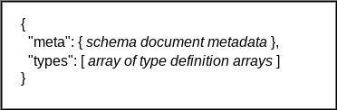
Figure 3-4 illustrates the structure of JADN for defining any Primitive CoreType, or ArrayOf or MapOf type; for all of these the Fields array is empty:
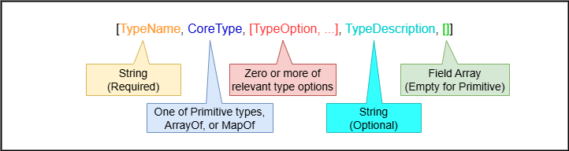
Figure 3-5 illustrates the structure of JADN for defining an Enumerated CoreType; for enumerations each item definition in the Fields array has three elements:
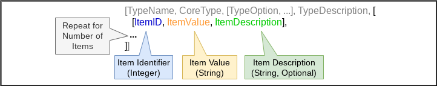
Figure 3-6 illustrates the structure of JADN for defining a CoreType of Array, Choice, Map, or Record; for these types each field definition in the Fields array has five elements:
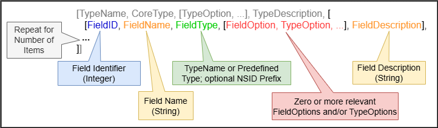
The [JADN Specification] identifies three formats (Section 5) in addition to the native format:
Figure 3-6a identifies the various representations. The formal definitions of each of these types are found in sections 5.1, 5.2, and 5.3, respectively, of the [JADN Specification].
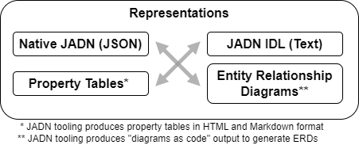
Automated tooling makes it straightforward to translate among all four of these formats in a lossless manner, and each format has its advantages:
The table style and ERD representations can be readily generated in an automated manner by translating the JADN schema to source code for rendering in various formats. For example, tables can be created using Markdown or HTML code, and ERDs can be created from code for rendering engines such as [Graphviz] or [PlantUML].
When defining elements of type Array or Enum.ID in JIDL, no field
names are used. These types are defined using a field ID and a TypeName.
For documentation and debugging purposes a FieldName can be included in
the JIDL comment field, immediately following the // and
followed by a double colon delimiter (i.e., ::). For more
information see the [JADN Specification]
descriptions of Field Identifiers (Section 3.2.1.1) and JADN-IDL format
(section 5.1). Here is a brief JIDL example of this format:
Publication-Data = Array // who and when of publication
1 String // label:: name of record label
2 String /date // rel_date:: and when did they let this dropEDITOR'S NOTE: section heading subject to change
This section describes JADN usage details that add flexibility or simplify the development of IMs.
The [JADN Specification] conformance statement (section 7) separates the definition of JADN into "Core JADN" (sections 3.1, 3.2, 4, and 6) and "JADN Extensions" (section 3.3). Section 3.3 explains that extensions "make type definitions more compact or support the Don't Repeat Yourself (DRY) software design principle. Extensions are syntactic sugar that can be replaced by core definitions without changing their meaning." While the implementation of extensions by JADN tools is optional, in a conformance sense, the availability of extensions reduces the level of effort required by a JADN schema author and can make a schema more compact and understandable.
The JADN Specification also defines a "system character" (by default
the dollar sign, $) and in the Name Formats (section 3.1.2)
reserves the use of that character to automated tooling, saying "Schema
authors should not create TypeNames containing the System character, but
schema processing tools may do so".
Examples of the use of extensions and the role of the system character are provided in sections 3.3.1, 3.3.2, and 3.3.2 of the JADN Specification. As noted in Section 3.1.1.4, JADN Type Options can be applied to fields in compound types, but as explained in Section 3.3.1 of the JADN Specification, this is an extension that leads to the anonymous definition of a new type when processed by automated tooling. The example provided there is:
Member = Record
1 name String
2 email String /emailUnfolding replaces this with:
Member = Record
1 name String
2 email Member$email
Member$email = String /email // Tool-generated type definition.The type definition for Member$email was generated by
the tooling, as both noted in the comment and indicated by the presence
of the $ character in the type name. The same result could
be achieved in Core JADN by defining a separate Email
type:
Member = Record
1 name String
2 email Email
Email = String /emailThe author(s) of an IM can determine whether the use of anonymous type definitions generated by JADN tooling improves the clarity of an model. For the example above, defining an email type that can be referenced throughout the model would likely be better than multiple, equivalent anonymous email types. In other cases the readability of the model can benefit from concisely written JADN (or JIDL) that relies on the tooling to generate the necessary types.
Each of the compound types is a container, a named group of related items such as the latitude and longitude of a geographic coordinate, or the set of properties of an object. In addition to its individual items, every container has multiplicity attributes, including limits on the number of items, whether the items have a sequential ordering, and whether duplicate items are allowed.
The JADN compound types and their options are chosen for an IM based on the information characteristics to be modeled:
and the decision tree for which compound type to use is shown in Table 3-8:
| Value | Key:Value | |
|---|---|---|
| Same Type | ArrayOf(ValueType) | MapOf(KeyType, ValueType) |
| Individual Type | Array | Map or Record |
For the last information type - containers of individually-defined key:value pairs - JADN provides two types: Map and Record. The difference is that Record keys have a sequential ordering while Map keys do not. Map instances are always serialized as key:value pairs, while Record instances may be serialized as either key:value pairs or table rows with values in column position, depending on data format.
For example if Location is a Record type:
Location = Record
1 name String
2 state String
3 latitude Number
4 longitude Numberits instances are serialized using verbose JSON data format as:
[
{
"name": "St. Louis",
"state": "Missouri",
"latitude": "38.627003",
"longitude": "-90.199402"
},
{
"name": "Seattle",
"state": "Washington",
"latitude": "47.60621",
"longitude": "-122.33207"
}
]The same Record values are serialized using compact JSON data format (where the column positions are 1: name, 2: state, 3: latitude, 4: longitude) as:
[
["St. Louis", "Missouri", "38.627003", "-90.199402"],
["Seattle", "Washington", "47.60621", "-122.33207"]
]If Location is a Map type, its instances are always serialized as key:value pairs regardless of data format, the same as a Record in verbose JSON.
Another significant UML concept is that JADN distinguishes among all four multiplicity types ([UML], Table 7.1), while logical models typically support only sets. Table 3-9 replicates the information from UML Table 7.1 and adds the equivalent JADN types. Note that the UML Specification cites the "traditional names" in its "Collection Type" column.
| isOrdered | isUnique | Collection Type |
JADN Type |
|---|---|---|---|
| false | true | Set | ArrayOf+set, MapOf |
| true | true | OrderedSet | ArrayOf+unique |
| false | false | Bag | ArrayOf+unordered |
| true | false | Sequence | ArrayOf |
JADN accepts the UML philosophy that schemas are classifiers that take a unit of data and determine whether it is an instance of a datatype, and recognizes the idea of generalization ([UML], 9.9.7) through use of the Choice type.
Beyond these UML concepts, JADN recognizes that information models are directed graphs with a small predefined set of core datatypes and only two kinds of relationship: "contain" and "reference".
The minv and maxv type options are
distinctive in that they can apply to both primitive and compound types,
with a different meaning in these two applications:
minv and maxv type options constrain the
values an instance of that type may hold. Specifically, when
applied to:
minv and maxv type
options constrain the numeric values an instance of that type may
hold.minv and maxv type
options constrain the number of characters in the string.minv and maxv type
options constrain the number of octets (bytes) in the binary value.For example, the following specifies an Integer type that can be
assigned values between 1 and 1000, using both
JADN (see Section 3.1.3.1) and JIDL
notation (see Section 3.1.3.2):
["count","integer",["{1", "}1000"], "count of objects",[]]
// define a restricted count value
count = integer {1..1000} // count of objectsminv and maxv type options
constrain the number of elements an instance of that type may
have. For example, the following specifies a Record type that must have
at least two fields populated, even though only one field is required
(fields field_2 and field_3 are indicated as
optional by the ["[0"] field option [see Section 3.1.1.4]):["RecordType", "Record", ["{2"], "requires field_1 and either or both field_2 and field_3", [
[1, "field_1", "String", [], ""],
[2, "field_2", "String", ["[0"], ""],
[3, "field_3", "String", ["[0"], ""],
]]
RecordType = Record {2..*} // requires field_1 and either or both field_2 and field_3
1 field_1 String
2 field_2 String optional
3 field_3 String optional As explained in Section 3, JADN recognizes only two kinds of relationship: "contain" and "reference". The relationships shown in previous examples are all of the "contain" variety. The "reference" relationship type applies either when using the "contain" relationship would create a cycle or loop in the graph of the information model or when using "contain" relationships would create data duplication. An example of cycle creation might occur, for example, in an IM for an SBOM format: because software components often incorporate other components a recursive situation arises when referring to the incorporated components:
Component - Record
...
8 Components ArrayOf(Component) {0..*}
...When recursion is used in programming it is terminated by a base condition, but an IM has no corresponding concept to terminate recursion. JADN uses "reference" relationships in situations where cycles occur in order to address this need. The method to define reference relationships is explained in Section 3.3.6, Links, of the [JADN Specification].
Figure 3-8 illustrates permissible and impermissible "contains"
relationships, and the use of the key and link
keywords combined with an identifier field to establish permissible
"reference" relationships. The green lines show permissible
relationships, the red lines impermissible ones that create cycles in
the graph. The dotted green line in the lower left portion is a
"reference" relationship enabled by the inclusion of a unique identifier
in Record H, created by the use of the key
field option to designate a primary key for objects described by
Record H, and the corresponding use of the
link field option in Record G when referring
to such objects; the link field option both designates the
field as a reference and generates the correct key type when extensions
are removed by JADN tooling.
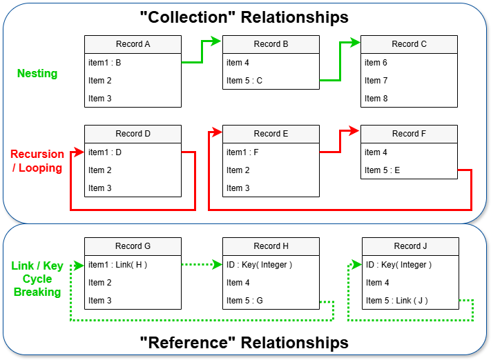
Record J in the lower right portion of the figure shows
a self-referential key / link application. This is a
generalization of the example from Section 3.3.6 of the JADN
Specification, which allows for numerous relationships between objects
of type Person:
Person = Record
1 id Key(Integer)
2 name String
3 mother Link(Person)
4 father Link(Person)
5 siblings Link(Person) [0..*]
6 friends Link(Person) [0..*]The "references" relationship is also useful to reduce duplication
when an information item may apprear multiple times in a data structure.
This use of the key / link structure is
demonstrated in Section 3.3.3. In that
example university classes are linked to students by a reference
relationship to account for the likelihood that any individual student
will most likely be registered for multiple classes. By
referencing students records, only one record per student need
appear in the data set regardless of how many classes they are
registered for.
Section 6 of the [JADN Specification] introduces the use of packages as the mechanism for organizing JADN schemas. This section provides additional information on the use of packages, along with the associated concept of namespaces.
At the simplest level, a package is a file containing a JADN schema in the form of JSON data, as described in Section 3.1.3.1. A JADN package document may contain a complete JADN schema or a portion of a schema. The file has two top-level components:
meta,
andtypes.Definitions of all of the Metadata fields are provided
in the JADN specification.
The metadata portion is entirely optional, but if present must
include the package field providing a URI for the package
to enable the package to be referenced from other packages. A single
schema may be divided into multiple packages (e.g., common types that
are used extensively in a model might be collected into a library
package), and a schema might also import one or more packages from a
different schema (e.g., to use information objects defined in the
official schema for a standard).
The exports portion of the package information is
informational; JADN packages aren't intended to enforce a rigorous
distinction between public and private types distinction. The
exports list provides a means for schema authors to
indicate the intended public types, and a basis for JADN schema tools to
detect discrepancies.
NOTE: this discussion of namespace management includes features to be added in JADN v1.1. The implementation of these features is backward-compatible with the handling of namespaces in JADN v1.0.
Namespaces identified in a schema package's metadata are the mechanism for managing the relationships among multiple schema packages. JADN namespace management provides for:
Breaking a schema into multiple packages that can be combined without defining a namespace
Including types defined in other schema packages under a specified namespace, including importing multiple packages under a single namespace
The JIDL representation of JADN namespace definition is:
Metadata = Map // Information about this package
...
8 namespaces Namespaces optional // Referenced packages
...
Namespaces = Choice(anyOf) // anyOf v1.1 or v1.0, in priority order
1 NsArr // ns_arr:: [prefix, namespace] syntax - v1.1
2 NsObj // ns_obj:: {prefix: namespace} syntax - v1.0
NsArr = ArrayOf(PrefixNs){1..*} // Type references to other packages - v1.1
PrefixNs = Array // Prefix corresponding to a namespace IRI
1 NSID // prefix::
2 Namespace // namespace::
NsObj = MapOf(NSID, Namespace){1..*} // Type references to other packages - v1.0
Namespace = String /uri // Unique name of a packageThe Namespaces = Choice(AnyOf) type allows the flexible
association of Namespace Identifiers (NSID) with the
Namespace other packages declare for themselves. A
Namespace Identifier (NSID) is, by default, a 1-8 character string
beginning with a letter and containing only letters and numbers (the
default formatting can be overridden by inserting an alternative
definition into a JADN schema's Metadata map's
config section). The JADN v1.1 NsAr / PrefixNS
structure enables multiple schema packages to be mapped to one NSID to
group all of the types defined in that collection of packages into a
single namespace. For any array element where the NSID
field is blank, the types in the referenced package are made available
in the current package without need for any NSID.
Within the schema package's Types definitions JADN uses
the common convention of using the NSID followed by a colon to link an
item to the namespace where it is defined (e.g.,
NSID:TypeName). So assuming the existence of
Package A, and Package B, where
Package B imports Package A with the NSID
packa, then types defined in Package A can be
used within Package B by identifying them as
packa:Some-Package-A-Type.
An example of grouping multiple packages into the namespace of the
importing package can be drawn from an IM of the NIST Open Security
Controls Assessment Language [OSCAL], where the
packages for the common metadata and
backmatter structures, along with the various OSCAL
document types, are imported without any NSID to create a single
schema.
namespaces: [["", "https://example.gov/ns/oscal/0.0.1/metadata/"],
["", "https://example.gov/ns/oscal/0.0.1/backmatter/"],
["", "https://example.gov/ns/oscal/0.0.1/catalog/"],
["", "https://example.gov/ns/oscal/0.0.1/profile/"],
["", "https://example.gov/ns/oscal/0.0.1/component/"],
["", "https://example.gov/ns/oscal/0.0.1/ssp/"],
["", "https://example.gov/ns/oscal/0.0.1/assessment_plan/"],
["", "https://example.gov/ns/oscal/0.0.1/assessment_results/"],
["", "https://example.gov/ns/oscal/0.0.1/component/poam/"]]EDITOR'S NOTE: is it worthwhile to present both the v1.0 and v1.1 approaches to the following example?
As a concrete example of applying distinct namespaces for multiple
packages, here is the meta portion of a JADN Schema for an
OpenC2 consumer that implements two actuator profiles: stateless packet
filtering (SLPF) and posture attribute collection, along with the OpenC2
Language Specification:
"meta": {
"package": "http://acme.com/schemas/device-base/pacf/v3",
"title": "OpenC2 base device schema for the PACE collection service and packet filter",
"exports": ["OpenC2-Command", "OpenC2-Response"],
"namespaces": {
"ls": "http://docs.oasis-open.org/openc2/ns/types/v2.0",
"slpf": "http://docs.oasis-open.org/openc2/ns/ap-slpf/v2.0",
"pac": "http://docs.oasis-open.org/openc2/ns/ap-pac/v2.0"
}
}Within this schema ls:, slpf:, and
pac: will be used when referencing types from the three
external schemas .
The JADN language is generally applicable to information modeling, and independent of the process used for developing a model. Future versions of this Committee Note will provide process notes based on experience developing and documenting information models using JADN. Brief summations are provided here of the approaches described in available literature; the reader is encouraged to reviewed the referenced papers for a more thorough discussion of each process described.
In her paper Information Modeling: From Design to Implementation [YTLee], the author discusses the importance of information models and describes a process. While the paper focuses on information modeling for manufacturing, the process described is generally applicable. The process described in this paper has the following steps:
Define the scope of the model, identifying the domain of discourse and the processes to be supported by the IM.
Conduct a requirements analysis to define information requirements.
Develop the model, transforming information requirements into a conceptual model. This may employ a top-down, bottom-up, or mixed / inside-out approach.
Group concepts to identify units of functionality
Structure information requirements into entities, objects, or classes
Capture the model in the chosen modeling language
In their paper Information modeling: The process and the required competencies of its participants [Frederiks], the authors discuss the process of information modeling, its quality and the required competencies of its participants.
In the Frederiks approach, the process has two roles (which may be filled by groups):
and the process has four phases:
Elicitation: used to drive creation of a requirements document, an informal specification in natural language.
Modeling: the creation of a conceptual model based on the requirements document.
Verification: confirmation that the formal specification correctly applies the formal syntax rules of the chosen modeling technique.
Validation: confirmation with the domain expert that the formal model properly represents the requirements document.
The process is executed in an iterative sequence of modeling, verification and validation. At least one iteration of the modeling loop is required.
As discussed in Section 1.1.5, JADN is a general purpose tool for information modeling, and can be applied to a broad range of IM needs. Some possible subjects for IMs are:
This CN provides several examples to illustrate approaches to information modeling and the application of JADN. The example IMs are:
These examples use a mix of the various JADN representation formats described in Section 3.1.3, and the university example specifically illustrates the use of all of the representations to present a single information model.
This example shows a simple IM for a digital music library and can be considered a "Hello World" example of applying the concepts described in this committee note. The components of the library are presented here in JIDL form along with brief descriptions. The final ERD for the library appears at the end of this section. The complete, consolidated JADN, JIDL, and property tables can be found in Appendix E.1.
The model assumes that each track is stored as a file with its audio in one of several recognized formats. The library organizes tracks into albums, which are associated with a barcode identifier. The model is loosely based on the ID3 metadata used with MP3 audio files. Figure 3-9 provides a conceptual overview of the music library's structure.
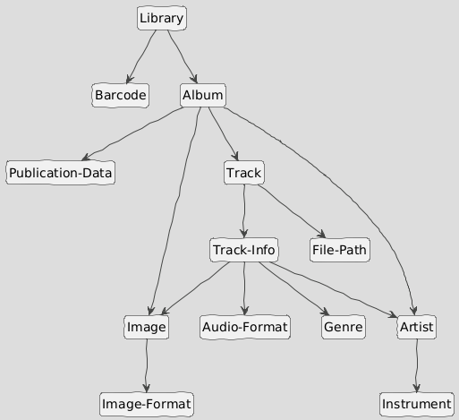
The JADN package for the music library IM provides basic metadata:
title: "Music Library"
package: "http://fake-audio.org/music-lib"
version: "1.1"
description: "This information model defines a library of audio tracks,
organized by album, with associated metadata regarding
each track. It is modeled on the types of library data
maintained by common websites and music file tag editors."
license: "CC0-1.0"
exports: ["Library"]At the top level, the library is map of barcodes to albums. The
barcode serves as a convenient unique identifier for each album. A UPC-A
barcode is a 12-digit number, and a pattern Type Option is
used to constrain the String type that models it
accordingly.
Library = MapOf(Barcode, Album){1..*} // Top level of the library is a map of CDs by barcode
Barcode = String{pattern="^\d{12}$"} // A UPC-A barcode is 12 digitsEach album is represented by a record containing the album's artist,
title, publication data, cover art, total track count, and an array of
individual audio tracks. Multiple digital image formats are supported
for the cover art. Note that this example also contains an example of an
anonymous type definition (i.e., the release_date field in
the Publication-Data record) as described in Section 3.1.4.1.
Album = Record // model for the album
1 album_artist Artist // primary artist associated with this album
2 album_title String // publisher's title for this album
3 pub_data Publication-Data // metadata about the album's publication
4 tracks Track [1..*] // individual track descriptions and content
5 total_tracks Integer{1..*} // total track count
6 cover_art Image optional // cover art image for this album
Publication-Data = Record // who and when of publication
1 publisher String // record label that released this album
2 release_date String /date // and when did they let this drop
Image = Record // pretty picture for the album or track
1 image_format Image-Format // what type of image file?
2 image_content Binary // the image data in the identified format
Image-Format = Enumerated // can only be one, but can extend list
1 PNG
2 JPG
3 GIFArtists have a name and one or more associated instruments that they
perform on. The same information applies whether the artist is the
primary performer (i.e., album_artist in the
Album record) or a guest performer (i.e.,
featured_artist in a Track-Info record)
Artist = Record // interesting information about a performer
1 artist_name String // who is this person
2 instruments Instrument unique [1..*] // and what do they play
Instrument = Enumerated // collection of instruments (non-exhaustive)
1 vocals
2 guitar
3 bass
4 drums
5 keyboards
6 percussion
7 brass
8 woodwinds
9 harmonicaEach track is stored in a file, and has a track number within the album along with a title, length, genre, potentially "featured" artists, the audio data, and optionally individual track art. Multiple digital audio formats are supported for the audio content.
Track = Record // for each track there's a file with the audio and a metadata record
1 location File-Path // path to the audio file location in local storage
2 metadata Track-Info // description of the track
Track-Info = Record // information about the individual audio tracks
1 track_number Integer // track sequence number
2 title String // track title
3 length Integer{1..*} // length of track in seconds; anticipated user display is mm:ss;
// minimum length is 1 second
4 audio_format Audio-Format // format of the digital audio
5 featured_artist Artist unique [0..*] // notable guest performers
6 track_art Image optional // each track can have optionally have individual artwork
7 genre Genre
Audio-Format = Enumerated // can only be one, but can extend list
1 MP3
2 OGG
3 FLAC
4 MP4
5 AAC
6 WMA
7 WAV
Genre = Enumerated // Enumeration of common genres
1 rock
2 jazz
3 hip_hop
4 electronic
5 folk_country_world
6 classical
7 spoken_word
File-Path = String // local storage location of file with directory path
// from root, filename, and extensionThe entity relationship diagram in Figure 3-10 illustrates how the model components connect.
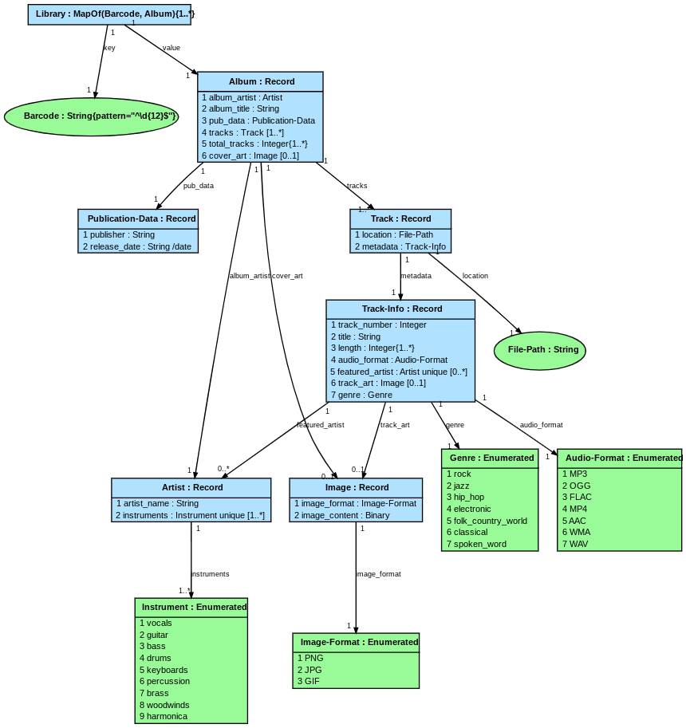
This example illustrates developing an abstract IM from an existing well-defined data structure. The IPv4 packet header definition originates from [RFC 791], with some details of the header modified by subsequent RFCs. While there may be limited utility in leveraging JADN's information equivalence focus to generate IPv4 packet header encodings other than binary, the model is useful to document the fields of the header and describe their conceptual purpose. This model was developed based on the content of three Wikipedia pages related to the IPv4 packet header:
The model comprises a JADN Array type containing all of the fields of
the IPv4 packet header (except the options field),
supported by two Enumerated types to explicate the meanings of
particular fields. Figure 3-11 shows the packet header array in JIDL
form. In this representation the field "names" are embedded in the JIDL
comment field between the // and ::
delimiters, as described in Section 3.1.3.2.1.
IPv4-Packet-Header = Array // fields in an IPv4 packet header, per RFC 791 and subsequent contributions
1 Integer /u4 // version:: version; always = 4 for an IPv4 packet header (4 bits)
2 Integer /u4 // ihl:: Internet Header Length (4 bits)
3 Diff-Svcs-Code-Point // dscp:: Differentiated Services Code Point (enumeration, 6 bits)
4 ECN // ecn:: Explicit Congestion Notification (enumeration, 2 bits)
5 Integer{20..65535} /u16 // total_length:: entire packet size in bytes, including header and data
// (min: 20 bytes (header without data) / max: 65,535 bytes)
6 Integer /u16 // ident:: identification field; primarily used for uniquely identifying
// the group of fragments of a single IP datagram
7 Boolean // reserved_flag:: Reserved flag field; should be set to 0 (1-bit)
8 Boolean // dont_frag:: Don't Fragment flag (1 bit)
9 Boolean // more_frags:: More Fragments (1 bit): cleared for unfragmented packets
// and last fragment of a fragmented packet
10 Integer{0..8191} /u13 // frag_offset:: specifies the offset of a particular fragment relative to
// the beginning of the original unfragmented IP datagram (13 bits)
11 Integer /u8 // time_to_live:: datagram's lifetime specified in seconds, but time intervals less than
// 1 second are rounded up to 1. In practice, the field is used as a hop count
12 Integer /u8 // protocol:: transport layer protocol, per IANA registry
13 Integer /u16 // header_checksum:: used for error checking of the packet header
14 Binary /ipv4-addr // source_addr:: source address for the packet sender; may be modified by NAT
15 Binary /ipv4-addr // dest_addr:: address for the intended recipient of the packet; may be modified by NATThis portion of the model highlights the application of a number of JADN capabilities:
/ipv4-addr
TypeOption to specify IPv4 network addressesThree fields of the IPv4 packet header are functionally enumerations:
The values for the Protocol field are managed by the
Internet Assigned Numbers Authority (IANA); this model does not include
an explicit enumeration of the IANA-assigned values. The model makes the
meaning and use of the DSCP and ECN fields clearer by definiting
associated enumerations, as illustrated in Figure 3-12.
Diff-Svcs-Code-Point = Enumerated // Differentiated Services Code Point, 6 bits
0 df // Default Forwarding (best effort)
10 af-c1-dpL // Assured Forwarding (RFCs 2597 / 3260) - class 1 / drop probability low
12 af-c1-dpM // Assured Forwarding (RFCs 2597 / 3260) - class 1 / drop probability medium
14 af-c1-dpH // Assured Forwarding (RFCs 2597 / 3260) - class 1 / drop probability high
18 af-c2-dpL // Assured Forwarding (RFCs 2597 / 3260) - class 2 / drop probability low
20 af-c2-dpM // Assured Forwarding (RFCs 2597 / 3260) - class 2 / drop probability medium
22 af-c2-dpH // Assured Forwarding (RFCs 2597 / 3260) - class 2 / drop probability high
26 af-c3-dpL // Assured Forwarding (RFCs 2597 / 3260) - class 3 / drop probability low
28 af-c3-dpM // Assured Forwarding (RFCs 2597 / 3260) - class 3 / drop probability medium
33 af-c3-dpH // Assured Forwarding (RFCs 2597 / 3260) - class 3 / drop probability high
34 af-c4-dpL // Assured Forwarding (RFCs 2597 / 3260) - class 4 / drop probability low
36 af-c4-dpM // Assured Forwarding (RFCs 2597 / 3260) - class 4 / drop probability medium
43 af-c4-dpH // Assured Forwarding (RFCs 2597 / 3260) - class 4 / drop probability high
44 va // Voice Admit (RFC 5865)
46 ef // Expedited Routing (RFC 3246)
ECN = Enumerated // Explicit Congestion Notification (RFC 3168)
0 not_ect // Not ECN-Capable Transport, Not-ECT
1 ect_1 // ECN Capable Transport(1), ECT(1)
2 ect_0 // ECN Capable Transport(0), ECT(0)
3 ce // Congestion Experienced, CEIn order to align with the various RFCs documenting the use of DCSP, the DSCP enumeration defines its field values in terms of the IETF's recommended values as documented in the Wikipedia article, rather than a simple monontic sequence of field values that would be the usual approach in a more design-oriented modeling activity.
EDITOR'S NOTE: intro text may need revision if examples are removed from the JADN Specification
The [JADN Specification], section 5.3, uses a simple example of an IM for a university to illustrate the use of ERDs for IMs. This section uses that ERD as a starting point for an example to illustrate the various JADN representations described in Section 3.1.3.2. The example begins with the ERD for the model:
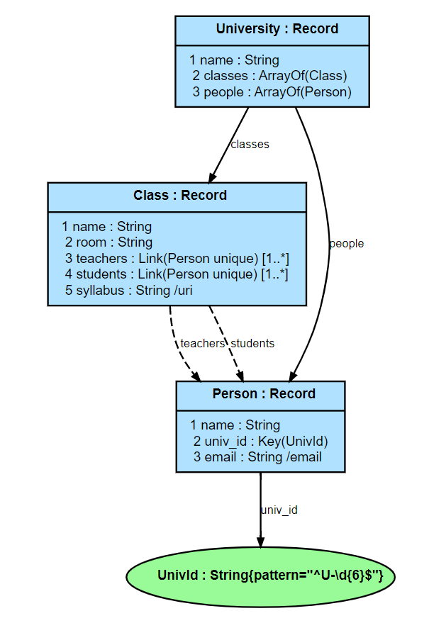
The package (see Section 3.1.6.1) containing the JADN corresponding to the above ERD is shown here:
{
"info": {
"package": "http://example.com/uni",
"exports": ["University"]
},
"types": [
["University", "Record", [], "A place of learning", [
[1, "name", "String", [], "University Name"],
[2, "classes", "ArrayOf", ["*Class"], "Available classes"],
[3, "people", "ArrayOf", ["*Person"], "Students and faculty"]
]],
["Class", "Record", [], "Pertinent info about classes", [
[1, "name", "String", [], "Name of class"],
[2, "room", "String", [], "Where it happens"],
[3, "teachers", "Person", ["L", "]0", "q"], "Teacher(s) for this class"],
[4, "students", "Person", ["L", "]0", "q"], "Students attending this class"],
[5, "syllabus", "String", ["/uri"], "Link to class syllabus on the web"]
]],
["Person", "Record", [], "", [
[1, "name", "String", [], "Student / faculty member name"],
[2, "univ_id", "UnivId", ["K"], "Unique ID for student / faculty member"],
[3, "email", "String", ["/email"], "Student / faculty member email"]
]],
["UnivId", "String", ["%^U-\\d{6}$"], "University ID (U-nnnnnn)", []]
]
}Converting the JSON to JIDL yields a representation that is both more readable and easier to edit:
package: "http://example.com/uni"
exports: ["University"]
University = Record // A place of learning
1 name String // University Name
2 classes ArrayOf(Class) // Available classes
3 people ArrayOf(Person) // Students and faculty
Class = Record // Pertinent info about classes
1 name String // Name of class
2 room String // Where it happens
3 teachers Link(Person unique) [1..*] // Teacher(s) for this class
4 students Link(Person unique) [1..*] // Students attending this class
5 syllabus String /uri // Link to class syllabus on the web
Person = Record
1 name String // Student / faculty member name
2 univ_id Key(UnivId) // Unique ID for student / faculty member
3 email String /email // Student / faculty member email
UnivId = String{pattern="^U-\d{6}$"} // University ID (U-nnnnnn)Property tables are a common representation of data structures in specifications. JADN is easily converted to property tables, which are quite readable but somewhat more challenging to edit than JIDL (the package information has been omitted from the set of property tables illustrated here). Each property table is preceeded by the comment on the type definition that created that table (e.g., the University Record type has the comment "A place of learning"). Those comments are set in italics in this example for clarity.
A place of learning
Type: University (Record)
| ID | Name | Type | # | Description |
|---|---|---|---|---|
| 1 | name | String | 1 | University Name |
| 2 | classes | ArrayOf(Class) | 1 | Available classes |
| 3 | people | ArrayOf(Person) | 1 | Students and faculty |
Pertinent info about classes
Type: Class (Record)
| ID | Name | Type | # | Description |
|---|---|---|---|---|
| 1 | name | String | 1 | Name of class |
| 2 | room | String | 1 | Where it happens |
| 3 | teachers | Link(Person unique) | 1..* | Teacher(s) for this class |
| 4 | students | Link(Person unique) | 1..* | Students attending this class |
| 5 | syllabus | String /uri | 1 | Link to class syllabus on the web |
Type: Person (Record)
| ID | Name | Type | # | Description |
|---|---|---|---|---|
| 1 | name | String | 1 | Student / faculty member name |
| 2 | univ_id | Key(UnivI+d) | 1 | Unique ID for student / faculty member |
| 3 | String /email | 1 | Student / faculty member email |
| Type Name | Type Definition | Description |
|---|---|---|
| UnivId | String{pattern="^U-\d{6}$"} | University ID (U-nnnnnn) |
Finally, the code to generate the ERD presented at the beginning of the example is easily generated from the JADN model. In this specific example code for the widely-used GraphViz tool is provided. JADN tooling can created "diagram as text" code for GraphVIZ and PlantUML with varying levels of detail (i.e., Conceptual, Logical, Informational). For example, contrast the simple conceptual view of the music libary in Figure 3-9 with the detailed informational ERD at the start of this section (Figure 3-13).
# package: http://example.com/uni
# exports: ['University']
digraph G {
graph [fontname=Arial, fontsize=12];
node [fontname=Arial, fontsize=8, shape=record, style=filled, fillcolor=lightskyblue1];
edge [fontname=Arial, fontsize=7, arrowsize=0.5, labelangle=45.0, labeldistance=0.9];
bgcolor="transparent";
n0 [label=<{<b>University : Record</b>|
1 name : String<br align="left"/>
2 classes : ArrayOf(Class)<br align="left"/>
3 people : ArrayOf(Person)<br align="left"/>
}>]
n1 [label=<{<b>Class : Record</b>|
1 name : String<br align="left"/>
2 room : String<br align="left"/>
3 teachers : Link(Person unique) [1..*]<br align="left"/>
4 students : Link(Person unique) [1..*]<br align="left"/>
5 syllabus : String /uri<br align="left"/>
}>]
n2 [label=<{<b>Person : Record</b>|
1 name : String<br align="left"/>
2 univ_id : Key(UnivId)<br align="left"/>
3 email : String /email<br align="left"/>
}>]
n3 [label=<<b>UnivId : String{pattern="^U-\d{6}$"}</b>>, shape=ellipse, style=filled, fillcolor=palegreen]
n0 -> n1 [label=classes]
n0 -> n2 [label=people]
n1 -> n2 [label=teachers, style="dashed"]
n1 -> n2 [label=students, style="dashed"]
n2 -> n3 [label=univ_id]
}This appendix contains the informative references that are used in this document.
While any hyperlinks included in this appendix were valid at the time of publication, OASIS cannot guarantee their long-term validity.
Recommendation ITU-T X.680 (2021) Information technology - Abstract Syntax Notation One (ASN.1): Specification of basic notation
"The Data Engineer's Guide to Declarative vs Imperative for Data", https://www.dataops.live/the-data-engineers-guide-to-declarative-vs-imperative-for-data
"IoT Bridge Taxonomy", D. Thaler, submission to Internet of Things (IoT) Semantic Interoperability (IOTSI) Workshop 2016, https://www.iab.org/wp-content/IAB-uploads/2016/03/DThaler-IOTSI.pdf
P.J.M. Frederiks, Th.P. van der Weide, Information modeling: The process and the required competencies of its participants, Data & Knowledge Engineering, Volume 58, Issue 1, 2006, https://www.sciencedirect.com/science/article/pii/S0169023X05000753
CMA International, "ECMAScript 2022 Language Specification", ECMA-262 15th Edition, June 2022, https://www.ecma-international.org/ecma-262.
ISO/IEC/IEEE 31320-2:2012 Information technology — Modeling Languages — Part 2: Syntax and Semantics for IDEF1X97 (IDEFobject), International Organization for Standardization and International Electrotechnical Commission, 2012. https://www.iso.org/standard/60614.html
"Entropy (information theory)", https://en.wikipedia.org/wiki/Entropy_(information_theory)
JSON Abstract Data Notation Version 1.0. Edited by David Kemp. 17 August 2021. OASIS Committee Specification 01. https://docs.oasis-open.org/openc2/jadn/v1.0/cs01/jadn-v1.0-cs01.html. Latest stage: https://docs.oasis-open.org/openc2/jadn/v1.0/jadn-v1.0.html.
Wright, A., Andrews, H., Hutton, B., "JSON Schema Validation", Internet-Draft, 16 September 2019, https://tools.ietf.org/html/draft-handrews-json-schema-validation-02, or for latest drafts: https://json-schema.org/work-in-progress.
Lombardi, Olimpia ; Holik, Federico & Vanni, Leonardo (2016). What is Shannon information? Synthese 193 (7):1983-2012, https://www.researchgate.net/publication/279780496_What_is_Shannon_information
NTIA Multistakeholder Process on Software Component Transparency, "SBOM At A Glance", April 2021, https://ntia.gov/sites/default/files/publications/sbom_at_a_glance_apr2021_0.pdf
OSCAL: the Open Security Controls Assessment Language, https://pages.nist.gov/OSCAL/
Open Command and Control (OpenC2) Architecture Specification Version 1.0. Edited by Duncan Sparrell. 30 September 2022. OASIS Committee Specification 01. https://docs.oasis-open.org/openc2/oc2arch/v1.0/cs01/oc2arch-v1.0-cs01.html. Latest stage: https://docs.oasis-open.org/openc2/oc2arch/v1.0/oc2arch-v1.0.html
Open Command and Control (OpenC2) Language Specification Version 1.0. Edited by Jason Romano and Duncan Sparrell. 24 November 2019. OASIS Committee Specification 02. https://docs.oasis-open.org/openc2/oc2ls/v1.0/cs02/oc2ls-v1.0-cs02.html. Latest version: https://docs.oasis-open.org/openc2/oc2ls/v1.0/oc2ls-v1.0.html.
"OWL 2 Web Ontology Language Primer (Second Edition)", retrieved 10/25/2022, https://www.w3.org/TR/owl-primer/
Google Developers, "Protocol Buffers", https://developers.google.com/protocol-buffers/.
"Resource Description Framework (RDF) 1.2 Concepts and Abstract Syntax", W3C Working Draft, 22 August 2024, https://www.w3.org/TR/rdf12-concepts/#section-Datatypes
OASIS Technical Committee, "RELAX NG", November 2002, https://www.oasis-open.org/committees/tc_home.php?wg_abbrev=relax-ng.
"Internet Protocol - DARPA Internet Program Protocol Specification", RFC 791, September 1981, https://datatracker.ietf.org/doc/html/rfc791#section-3.1
Pras, A., Schoenwaelder, J., "On the Difference between Information Models and Data Models", RFC 3444, January 2003, https://tools.ietf.org/html/rfc3444.
Hinden, R. and S. Deering, "IP Version 6 Addressing Architecture", RFC 4291, DOI 10.17487/RFC4291, February 2006, https://www.rfc-editor.org/info/rfc4291.\
Fuller, V. and T. Li, "Classless Inter-domain Routing (CIDR): The Internet Address Assignment and Aggregation Plan", BCP 122, RFC 4632, DOI 10.17487/RFC4632, August 2006, https://www.rfc-editor.org/info/rfc4632.
Bormann, C., Hoffman, P., "Concise Binary Object Representation (CBOR)", RFC 7049, October 2013, https://tools.ietf.org/html/rfc7049.
Deering, S. and R. Hinden, "Internet Protocol, Version 6 (IPv6) Specification", STD 86, RFC 8200, DOI 10.17487/RFC8200, July 2017, https://www.rfc-editor.org/info/rfc8200.
Jimenez, J., Tschofenig, H., and D. Thaler, "Report from the Internet of Things (IoT) Semantic Interoperability (IOTSI) Workshop 2016", RFC 8477, DOI 10.17487/RFC8477, October 2018, https://www.rfc-editor.org/info/rfc8477.
Birkholz, H., Vigano, C. and Bormann, C., "Concise Data Definition Language (CDDL): A Notational Convention to Express Concise Binary Object Representation (CBOR) and JSON Data Structures", RFC 8610, DOI 10.17487/RFC8610, June 2019, https://www.rfc-editor.org/info/rfc8610
"A Mathematical Theory of Communication", https://en.wikipedia.org/wiki/A_Mathematical_Theory_of_Communication
"Unified Modeling Language", Version 2.5.1, December 2017, https://www.omg.org/spec/UML/2.5.1/About-UML/
W3C, "XML Schema Definition Language (XSD) 1.1 Part 1: Structures", 5 April 2012, https://www.w3.org/TR/xmlschema11-1. W3C, "XML Schema Definition Language (XSD) 1.1 Part 2: Datatypes", 5 April 2012, https://www.w3.org/TR/xmlschema11-2.
Lee, Y. (1999), Information Modeling: From Design to Implementation, IEEE Transactions on Robotics and Automation, [online], https://tsapps.nist.gov/publication/get_pdf.cfm?pub_id=821265 (Accessed October 5, 2022)
The OpenC2 TC thanks the following individuals for their assistance in the development of this Committee Note:
The following individuals have participated in the creation of this document and are gratefully acknowledged:
| First Name | Last Name | Company |
|---|---|---|
| Marco | Caselli | Siemens AG |
| Toby | Considine | University of North Carolina at Chapel Hill |
| Alex | Everett | University of North Carolina at Chapel Hill |
| Jane | Ginn | Cyber Threat Intelligence Network, Inc. (CTIN) |
| Andreas | Hverven | University of Oslo |
| David | Kemp | National Security Agency |
| David | Lemire | National Security Agency |
| Patrick | Maroney | AT&T |
| Vasileios | Mavroeidis | University of Oslo |
| Michael | Rosa | National Security Agency |
| Duane | Skeen | Northrop Grumman |
| Duncan | Sparrell | sFractal Consulting LLC |
| Gerald | Stueve | Fornetix |
| Drew | Varner | NineFX, Inc. |
| Revision | Date | Editor | Changes Made |
|---|---|---|---|
| imjadn-v1.0-cn01-wd01.md | 2023-01-18 | David Kemp | Initial working draft / CND01 |
| imjadn-v1.0-cn01-wd02.md | 2023-04-19 | David Kemp | Second WD / CN01 candidate |
| imjadn-v1.0-cn01-wd02.md | 2024-09-25 | David Lemire | Music library example updates (PR #53) |
| imjadn-v1.0-cn01-wd02.md | 2024-09-25 | David Kemp | Reorganize introduction (PR #55) |
| imjadn-v1.0-cn01-wd02.md | 2024-09-25 | David Lemire | Normalize JADN Spec reference style (PR #56) |
| imjadn-v1.0-cn01-wd02.md | 2024-10-04 | David Kemp | Move information definition to introduction (PR #57) |
| imjadn-v1.0-cn01-wd02.md | 2024-10-09 | David Lemire | Overall updates to types descriptions in 3.1.x (PR #58) |
| imjadn-v1.0-cn01-wd02.md | 2024-10-09 | David Lemire | Generalize description of SDO management system IM (PR #60) |
| imjadn-v1.0-cn01-wd02.md | 2024-10-23 | David Lemire | Update namespaces discussion (4.1.2) with JADN v1.1 capabilities (PR #61) |
| imjadn-v1.0-cn01-wd02.md | 2024-10-23 | David Lemire | Initial revisions to Section 3.1 to improve readability (PR #63) |
| imjadn-v1.0-cn01-wd02.md | 2024-10-28 | David Lemire | Relocate multiple representations example (from 3.1.5.3 to 3.3.2) (PR #65) |
| imjadn-v1.0-cn01-wd02.md | 2024-10-28 | David Lemire | Revise structure of Section 3.1 for improved clarity and sequencing (PR #66) |
| imjadn-v1.0-cn01-wd02.md | 2024-10-29 | David Lemire | Refine Figure 4-1 (references relationships) (PR #70) |
| imjadn-v1.0-cn01-wd02.md | 2024-11-06 | David Lemire | Transfer Section 2 material from CS (PR #71) and integrate with existing content (PR #74) |
| imjadn-v1.0-cn01-wd02.md | 2024-11-06 | David Lemire | Add IPv4 packet header models as example of building from known structure (PR #71) |
| imjadn-v1.0-cn01-wd02.md | 2024-11-07 | David Lemire | Add definitions for lexical and value space and make associated adjustments (PR #76) |
| imjadn-v1.0-cn01-wd02.md | 2024-11-07 | David Lemire | Migrate Section 4 content into section 3.1 (PR #77) |
| imjadn-v1.0-cn01-wd02.md | 2024-11-07 | David Lemire | Administrative clean-up (PR #78) |
| imjadn-v1.0-cn01-wd02.md | 2024-11-14 | David Lemire | Update diagrams (PR #81) and text (PR #82) to align w/JADN Spec changes |
This appendix responds to a variety of Frequently Asked Questions regarding JADN.
The Universal Modeling Language UML says in section 21: "The PrimitiveTypes package is an independent package that defines a set of reusable PrimitiveTypes that are commonly used in the definition of metamodels." and takes the position that the set of natural numbers includes the value zero.
JADN uses the same UML primitive types with two exceptions:
UML natural numbers (integers greater than or equal to zero) are a subset of integers, so there is no need for a separate UnlimitedNatural primitive type. A JADN multivalued element may have an unlimited number of values if its type definition does not have a multiplicity upper bound. JADN assigns the Integer sentinel value -1, which is distinguished from all UML natural numbers, to indicate an unspecified upper bound in a multiplicity range. By convention text representations of a multiplicity range use the character "*" to indicate an unspecified upper bound.
Table D-1 lists the UML and JADN Primitive types.
| UML | JADN |
|---|---|
| --- | Binary |
| Boolean | Boolean |
| Integer | Integer |
| Real | Number |
| String | String |
| UnlimitedNatural | Integer {0..*} |
Editor's Note: Ignore numbering; Primitives will be moved into document body. Declarative may as well, or FAQ appendix may be renamed to something like "Notes"
The introduction states: "An IM is a declarative specification that defines desired outcomes (data item validity and equivalence) without describing control flow." But what does "declarative" mean in practice?
The DataOps Guide is a tutorial on the difference between declarative and imperative approaches, as well as the difference between those approaches when applied to software programming vs. database management. It uses simple relational database tables for illustration, but declarative schemas are also used with more flexible NoSQL databases such as Elasticsearch and MongoDB, graph databases including Neo4j, and non-database artifacts such as protocol messages and documents.
The Guide points out that:
A declarative approach is an abstraction based on our interaction with the system. When you look under the hood, all systems depend on a set of [imperative] instructions. Instead of the system depending on you to supply those instructions, they are predefined.
An information model combines the abstraction of declarative specifications with the abstraction of separating logical datatypes from concrete representations. Its desired outcomes are:
Its predefined instructions implement the behavior of its built-in datatypes, which can be extended with application-specific imperative validation and translation functions.
Examples of other possible JADN applications include defining:
This section discusses the relationship between JADN and RDF, and why RDF does not serve the purpose of an Information Model
The following comment was submitted in response to the OASIS JADN public review:
Have you considered the following specifications from W3C: RDF, RDFS, JSON-LD, SHACL? RDF, RDFS (and potentially OWL and BFO) should take care of your information modelling needs, JSON-LD provides a JSON serializations, SHACL provides extensive validation capabilities. I would be interested to see the analysis why these technologies were eliminated after your consideration.
The short answer (RDF models knowledge while JADN models information) is provided in the [JADN Specification] introduction:
UML class models and diagrams are commonly referred to as "Data Models", but they model knowledge of real-world entities using classes. In contrast, information models model data itself using datatypes.
An RDF graph is a knowledge model / ontology consisting of (subject, predicate, object) triples, where each member of the triple can be an International Resource Identifier (IRI), blank node, or literal. An RDF triple encodes a statement—a simple logical expression, or claim about the world. A JADN graph, in contrast, consists of DataType definitions that define the information content of data instances.
In order to understand why RDF is not suitable as an information modeling language, one must understand two things about information:
Information distinguishes significant data from insignificant data. (In Shannon's original context signal and noise are in the analog domain, but entropy is meaningful even in purely digital communication.)
Information defines loss. Lossless transformations across data formats preserve information; after a round trip significant data is unchanged and insignificant data can be ignored. A lossy round trip is lossy not because it alters data, but because it alters significant data.
Information models define the information capacity of data instances; two data formats are equivalent if conversion between them is lossless.
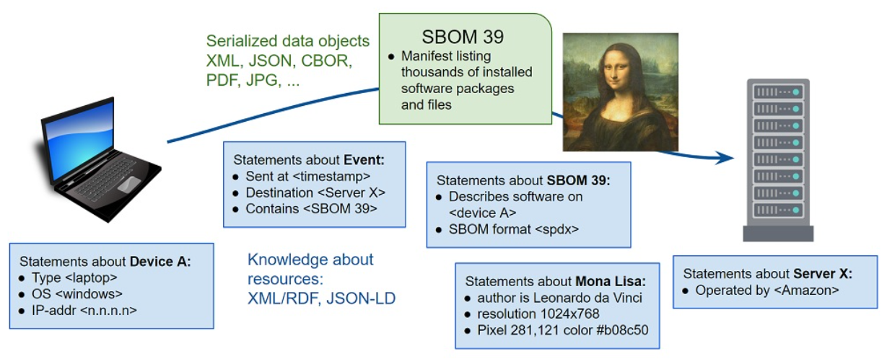
Resources can be physical or digital entities. Both can be subjects of knowledge model statements, but only digital resources can be modeled as information instances and serialized for transmission and storage. The RDF primer contains the following example statements about resources:
From context we can infer that <the Mona Lisa>, like <Bob> and <Alice>, is intended to be a physical resource.
The physical painting can never be serialized losslessly, because even a multi-band 3D camera that captures near-infrared images of pencil sketches beneath the paint and elevation contours of the brush strokes still does not capture, for example, the chemical and physical properties of the canvas, pencils, washes, pigments, binders, or other materials used in the painting. But though physical entities can never be modeled completely as data, camera images of them can be. A 1920x1080 image contains 2 million pixels that could be serialized in the lossless PNG format, or as 2 million XML/RDF statements of the form <mona lisa pixel 192,13> <has color> <#32b82f>. The raw image data can be serialized as RDF and deserialized back to raw without loss, but is it useful to do so? RDF is useful for statements like the painting was created by da Vinci in 1503-1506, is housed in the Louvre, depicts a smiling woman, and has cedar trees in the background. But if an application needs the image, PNG serialization is an appropriate tool for the job, RDF is not.
JADN defines specific digital resources that can be stored, communicated, and referenced by an RDF graph. If Bob is a physical <person> and <person> is a Class, an information model specifies selected details about Person entities in terms of their format-independent information content:
People = ArrayOf(Person)
Person = Record
1 name String
2 id Key(PersonId)
3 dob Integer /date-adhoc
4 weight Weight optional
5 hair_color Color optional
6 eye_color Color optional
Color = Enumerated
1 red
2 green
3 blue
4 brown
5 black
6 white
Weight = Integer // unit = grams
PersonId = String{pattern="..."}This defines a set of properties of the Person datatype and the collection characteristics of those properties: "Record" means that the collection is both ordered and unique, which in turn means that the properties could be serialized in JSON as either maps or arrays. Formats (in this case the hypothetical /date-adhoc) indicate that the "date of birth" property is the integer number of seconds since the epoch and can be serialized using the folksy string format from the RDF example. Defining times and durations as integers in the information model allows date strings of various text representations to be compared and ordered. The Color vocabulary could contain the 140 web-safe color names, or a defined set of fashion colors such as "medium golden blonde". Enumerations allow Color strings to be both validated for semantic meaningfulness and serialized as 8- or 16-bit values.
If a data instance can be losslessly converted among serializations A, B, and C, then by definition the instance conveys no more information than the smallest of its serializations.
JSON verbose serialization of <People>:
[{
"weight": 79546,
"dob": "the 4th of July 1990",
"id": "K193-3498-234",
"name": "Bob"
}, {
"name": "Alice",
"dob": "the 27th of June 1982",
"id": "B239-5921-348"
}]JSON compact serialization of <People>:
[
["Bob", "K193-3498-234", "the 4th of July 1990", 79546],
["Alice", "B239-5921-348", "the 27th of June 1982"]
]JSON concise serialization of <People>:
[
["Bob", "K193-3498-234", 647049600, 79546],
["Alice", "B239-5921-348", 393984000]
]CBOR serialization of <People> (converted from concise JSON):
56 Bytes:
82 # array(2)
84 # array(4)
63 # text(3)
426F62 # "Bob"
6D # text(13)
4B3139332D333439382D323334 # "K193-3498-234"
1A 26913180 # unsigned(647049600)
1A 000136BA # unsigned(79546)
83 # array(3)
65 # text(5)
416C696365 # "Alice"
6D # text(13)
423233392D353932312D333438 # "B239-5921-348"
1A 177BB800 # unsigned(393984000)This illustrates that regardless of serialization, the properties of Bob and Alice convey less than 56 bytes of information, or on average 28 bytes per person. An RDF/XML serialization could be lossless but would not supply any additional information. Information instances can be stored in a database, transmitted as XML, JSON, CBOR, or other formats, referenced by RDF graphs and included in other structured data. As with the PNG example, this suggests that information can be serialized in any suitable format, with RDF statements generated from it dynamically if needed to satisfy queries. Although this Person example does not include Bob's friends or interests, relationships can be defined within the information model or specified independently with RDF. JADN section 5.3 includes a slightly larger information model example with three types and four container and reference relationships among them.
Capture from Google Doc at https://docs.google.com/document/d/1gY8ZaQJmJTpx8468Conchc2XVzTKE8x0WFSQT1qtB8o/edit#heading=h.ru8h2khtb5aw
The [OWL Primer] describes OWL as follows:
The W3C OWL 2 Web Ontology Language (OWL) is a Semantic Web language designed to represent rich and complex knowledge about things, groups of things, and relations between things. OWL is a computational logic-based language such that knowledge expressed in OWL can be reasoned with by computer programs either to verify the consistency of that knowledge or to make implicit knowledge explicit.
Ontologies represent "knowledge about things", whereas IMs represent digital "things" themselves. As discussed in the body of this CN, an IM defines the essential content of entities used in computing independently of how those entities are serialized for communication or storage.
OWL has "object properties" and "data properties". Object properties are relationships between two entities and data properties are relations between an entity and a simple type. There is a rough correspondence between OWL terminology and concepts from Entity-Relationship modeling, Object Oriented Programming, and Information Modeling.
An information model models data, and the only entities in an information model are datatypes, where datatypes are either simple (a single value like string or integer) or structured (a collection of values like list or map). Translating an ontology's objects or classes into an information model's datatypes is often straightforward, but when there are alternative ways of representing the same objects as datatypes, an information model captures design decisions that are left unspecified in the ontology.
Some primary distinctions between knowledge and information models are directionality, multiplicity, referenceability, and individuality.
Although it may appear otherwise, an ontology is an undirected graph. Classes are connected by associations, and class associations are symmetric. If "car" and "part" are classes and a car is a composition of parts, then parts are components of car. If rose is a specialization of flower, then flower is a generalization of rose. If A is a parent of B, then B is a child of A. Arrows in an ontology diagram indicate which association term applies in the indicated direction, but the direction and term can be reversed together without changing the semantics of the graph. In contrast, an information model is a directed graph where direction determines syntax, and it has only two association types: contain and reference.
As an example, if a City datatype with name, elevation, and location properties contains a Coordinate datatype with latitude and longitude properties, one could say that Coordinate is "contained by" City without changing the model. The association direction is always container to contained, or referencing to referenced. A City instance with this graph direction is serialized as:
{ 'name': 'Hamilton',
'elevation': 20,
'location': { 'latitude': 32.2912, 'longitude': -64.7864 } }Reversing the direction changes the model. If Coordinate were the container it would have place, latitude, and longitude properties, while City would have just name and elevation:
{ 'place': { 'name': 'Hamilton', 'elevation': 20 },
'latitude': 32.2912,
'longitude': -64.7864 }OWL defines multiplicity as an attribute of associations. Collections (associations with a maximum cardinality greater than one) also have collection attributes ordered and unique, about which OWL says:
In an information model, collection attributes are intrinsic to the datatype itself and don't depend on associations with other datatypes. Just as a string type always has a string value, a list type always is an ordered, non-unique collection of values. In an information model both "object properties'' and "data properties" are datatypes, and a collection datatype has fixed collection attributes regardless of where it is used.
For whatever reason, {ordered, non-unique} almost never appears in ontologies. In contrast, lists are a fundamental variable type in computing and a fundamental data type in data interchange. List elements have an ordinal position and can be referenced by position. Collections that are {ordered, unique} have elements that can be referenced by either position or name, used when modeling data that can be structured as tables.
The datatype names commonly applied to collection attributes are:
| collection attributes | datatype |
|---|---|
| ordered, non-unique | sequence / list |
| unordered, unique | set, map |
| ordered, unique | ordered set, record |
| unordered, non-unique | bag |
An information model specifies collection attributes that are not explicit in an ontology in order to ensure equivalence across syntaxes.
Continuing the City example, Coordinate was assumed to be the default map type. But an information model would generally make it a list type, resulting in more compact serialized instances. All properties of type Coordinate would be serialized as lists without having to individually designate every association as {ordered, nonunique}:
{ 'name': 'Hamilton',
'elevation': 20,
'location': [32.2912, -64.7864] }Defining both City and Coordinate as record types (values are {ordered, unique}) allows them to be serialized either with property names or as table rows with "name", "elevation", and "location" columns:
[ 'Hamilton', 20, [32.2912, -64.7864] ]The record datatype specifies data that can be losslessly converted between map and table serializations (an object-relational mapping - ORM), unlike an ontology's default unordered properties which are two-column sets of key:value pairs.
Ontologies treat all objects as referenceable graph nodes, which requires every object to be assigned a primary key / unique identifier. Information models represent data structures using both referenceable and non-referenceable graph nodes. Containers are used by default to define serialization. References (foreign keys) are used when necessary to avoid data duplication and recursive structures.
All datatypes are distinguished only by their value, but some datatypes may be individually identified by having a primary key as part of their value. The terms used for non-individual types vary, but to avoid overloaded terms such as "class type" or "type type", types can be classified as either individual or fungible. People and bank accounts are examples of individual datatypes. Measurements, observations, mass-produced parts, currency, and IP addresses are examples of fungible datatypes. Coins are fungible unless grouped by mint; bills are fungible unless an application such as fraud detection requires identification by serial number.
These characteristics result in design guidelines for constructing an information graph from an ontology graph:
{
"info": {
"title": "Music Library",
"package": "http://fake-audio.org/music-lib",
"version": "1.1",
"description": "This information model defines a library of audio tracks, organized by album, with associated metadata regarding each track. It is modeled on the types of library data maintained by common websites and music file tag editors.",
"license": "CC0-1.0",
"exports": ["Library"]
},
"types": [
["Library", "MapOf", ["+Barcode", "*Album", "{1"], "Top level of the library is a map of CDs by barcode", []],
["Barcode", "String", ["%^\\d{12}$"], "A UPC-A barcode is 12 digits", []],
["Album", "Record", [], "model for the album", [
[1, "album_artist", "Artist", [], "primary artist associated with this album"],
[2, "album_title", "String", [], "publisher's title for this album"],
[3, "pub_data", "Publication-Data", [], "metadata about the album's publication"],
[4, "tracks", "Track", ["]0"], "individual track descriptions and content"],
[5, "total_tracks", "Integer", ["{1"], "total track count"],
[6, "cover_art", "Image", ["[0"], "cover art image for this album"]
]],
["Publication-Data", "Record", [], "who and when of publication", [
[1, "publisher", "String", [], "record label that released this album"],
[2, "release_date", "String", ["/date"], "and when did they let this drop"]
]],
["Image", "Record", [], "pretty picture for the album or track", [
[1, "image_format", "Image-Format", [], "what type of image file?"],
[2, "image_content", "Binary", [], "the image data in the identified format"]
]],
["Image-Format", "Enumerated", [], "can only be one, but can extend list", [
[1, "PNG", ""],
[2, "JPG", ""],
[3, "GIF", ""]
]],
["Artist", "Record", [], "interesting information about a performer", [
[1, "artist_name", "String", [], "who is this person"],
[2, "instruments", "Instrument", ["q", "]0"], "and what do they play"]
]],
["Instrument", "Enumerated", [], "collection of instruments (non-exhaustive)", [
[1, "vocals", ""],
[2, "guitar", ""],
[3, "bass", ""],
[4, "drums", ""],
[5, "keyboards", ""],
[6, "percussion", ""],
[7, "brass", ""],
[8, "woodwinds", ""],
[9, "harmonica", ""]
]],
["Track", "Record", [], "for each track there's a file with the audio and a metadata record", [
[1, "location", "File-Path", [], "path to the audio file location in local storage"],
[2, "metadata", "Track-Info", [], "description of the track"]
]],
["Track-Info", "Record", [], "information about the individual audio tracks", [
[1, "track_number", "Integer", ["[1"], "track sequence number"],
[2, "title", "String", [], "track title"],
[3, "length", "Integer", ["{1"], "length of track in seconds; anticipated user display is mm:ss; minimum length is 1 second"],
[4, "audio_format", "Audio-Format", [], "format of the digital audio"],
[5, "featured_artist", "Artist", ["q", "[0", "]0"], "notable guest performers"],
[6, "track_art", "Image", ["[0"], "each track can have optionally have individual artwork"],
[7, "genre", "Genre", [], ""]
]],
["Audio-Format", "Enumerated", [], "can only be one, but can extend list", [
[1, "MP3", ""],
[2, "OGG", ""],
[3, "FLAC", ""],
[4, "MP4", ""],
[5, "AAC", ""],
[6, "WMA", ""],
[7, "WAV", ""]
]],
["Genre", "Enumerated", [], "Enumeration of common genres", [
[1, "rock", ""],
[2, "jazz", ""],
[3, "hip_hop", ""],
[4, "electronic", ""],
[5, "folk_country_world", ""],
[6, "classical", ""],
[7, "spoken_word", ""]
]],
["File-Path", "String", [], "local storage location of file with directory path from root, filename, and extension"]
]
} title: "Music Library"
package: "http://fake-audio.org/music-lib"
version: "1.1"
description: "This information model defines a library of audio tracks, organized by album,
with associated metadata regarding each track. It is modeled on the types of
library data maintained by common websites and music file tag editors."
license: "CC0-1.0"
exports: ["Library"]
Library = MapOf(Barcode, Album){1..*} // Top level of the library is a map of CDs by barcode
Barcode = String{pattern="^\d{12}$"} // A UPC-A barcode is 12 digits
Album = Record // model for the album
1 album_artist Artist // primary artist associated with this album
2 album_title String // publisher's title for this album
3 pub_data Publication-Data // metadata about the album's publication
4 tracks Track [1..*] // individual track descriptions and content
5 total_tracks Integer{1..*} // total track count
6 cover_art Image optional // cover art image for this album
Publication-Data = Record // who and when of publication
1 publisher String // record label that released this album
2 release_date String /date // and when did they let this drop
Image = Record // pretty picture for the album or track
1 image_format Image-Format // what type of image file?
2 image_content Binary // the image data in the identified format
Image-Format = Enumerated // can only be one, but can extend list
1 PNG
2 JPG
3 GIF
Artist = Record // interesting information about a performer
1 artist_name String // who is this person
2 instruments Instrument unique [1..*] // and what do they play
Instrument = Enumerated // collection of instruments (non-exhaustive)
1 vocals
2 guitar
3 bass
4 drums
5 keyboards
6 percussion
7 brass
8 woodwinds
9 harmonica
Track = Record // for each track there's a file with the audio and a metadata record
1 location File-Path // path to the audio file location in local storage
2 metadata Track-Info // description of the track
Track-Info = Record // information about the individual audio tracks
1 track_number Integer // track sequence number
2 title String // track title
3 length Integer{1..*} // length of track in seconds; anticipated user display is mm:ss;
// minimum length is 1 second
4 audio_format Audio-Format // format of the digital audio
5 featured_artist Artist unique [0..*] // notable guest performers
6 track_art Image optional // each track can have optionally have individual artwork
7 genre Genre
Audio-Format = Enumerated // can only be one, but can extend list
1 MP3
2 OGG
3 FLAC
4 MP4
5 AAC
6 WMA
7 WAV
Genre = Enumerated // Enumeration of common genres
1 rock
2 jazz
3 hip_hop
4 electronic
5 folk_country_world
6 classical
7 spoken_word
File-Path = String // local storage location of file with directory path from root, filename, and extensionInformation Header
title: "Music Library"
package: "http://fake-audio.org/music-lib"
version: "1.1"
description: "This information model defines a library of audio tracks,
organized by album, with associated metadata regarding each
track. It is modeled on the types of library data maintained
by common websites and music file tag editors."
license: "CC0-1.0"
exports: ["Library"]| Type Name | Type Definition | Description |
|---|---|---|
| Library | MapOf(Barcode, Album){1..*} | Top level of the library is a map of CDs by barcode |
| Type Name | Type Definition | Description |
|---|---|---|
| Barcode | String{pattern="^\d{12}$"} | A UPC-A barcode is 12 digits |
model for the album
Type: Album (Record)
| ID | Name | Type | # | Description |
|---|---|---|---|---|
| 1 | album_artist | Artist | 1 | primary artist associated with this album |
| 2 | album_title | String | 1 | publisher's title for this album |
| 3 | pub_data | Publication-Data | 1 | metadata about the album's publication |
| 4 | tracks | Track | 1..* | individual track descriptions and content |
| 5 | total_tracks | Integer{1..*} | 1 | total track count |
| 6 | cover_art | Image | 0..1 | cover art image for this album |
who and when of publication
Type: Publication-Data (Record)
| ID | Name | Type | # | Description |
|---|---|---|---|---|
| 1 | publisher | String | 1 | record label that released this album |
| 2 | release_date | String /date | 1 | and when did they let this drop |
pretty picture for the album or track
Type: Image (Record)
| ID | Name | Type | # | Description |
|---|---|---|---|---|
| 1 | image_format | Image-Format | 1 | what type of image file? |
| 2 | image_content | Binary | 1 | the image data in the identified format |
can only be one, but can extend list
Type: Image-Format (Enumerated)
| ID | Item | Description |
|---|---|---|
| 1 | PNG | |
| 2 | JPG | |
| 3 | GIF |
interesting information about a performer
Type: Artist (Record)
| ID | Name | Type | # | Description |
|---|---|---|---|---|
| 1 | artist_name | String | 1 | who is this person |
| 2 | instruments | Instrument unique | 1..* | and what do they play |
collection of instruments (non-exhaustive)
Type: Instrument (Enumerated)
| ID | Item | Description |
|---|---|---|
| 1 | vocals | |
| 2 | guitar | |
| 3 | bass | |
| 4 | drums | |
| 5 | keyboards | |
| 6 | percussion | |
| 7 | brass | |
| 8 | woodwinds | |
| 9 | harmonica |
for each track there's a file with the audio and a metadata record
Type: Track (Record)
| ID | Name | Type | # | Description |
|---|---|---|---|---|
| 1 | location | File-Path | 1 | path to the audio file location in local storage |
| 2 | metadata | Track-Info | 1 | description of the track |
information about the individual audio tracks
Type: Track-Info (Record)
| ID | Name | Type | # | Description |
|---|---|---|---|---|
| 1 | track_number | Integer | 1 | track sequence number |
| 2 | title | String | 1 | track title |
| 3 | length | Integer{1..*} | 1 | length of track in seconds; anticipated user display is mm:ss; minimum length is 1 second |
| 4 | audio_format | Audio-Format | 1 | format of the digital audio |
| 5 | featured_artist | Artist unique | 0..* | notable guest performers |
| 6 | track_art | Image | 0..1 | each track can have optionally have individual artwork |
| 7 | genre | Genre | 1 |
| Type Name | Type Definition | Description |
|---|---|---|
| File-Path | String | local storage location of file with directory path from root, filename, and extension |
can only be one, but can extend list
Type: Audio-Format (Enumerated)
| ID | Item | Description |
|---|---|---|
| 1 | MP3 | |
| 2 | OGG | |
| 3 | FLAC | |
| 4 | MP4 | |
| 5 | AAC | |
| 6 | WMA | |
| 7 | WAV |
Enumeration of common genres
Type: Genre (Enumerated)
| ID | Item | Description |
|---|---|---|
| 1 | rock | |
| 2 | jazz | |
| 3 | hip_hop | |
| 4 | electronic | |
| 5 | folk_country_world | |
| 6 | classical | |
| 7 | spoken_word |
Copyright © OASIS Open 2023. All Rights Reserved.
All capitalized terms in the following text have the meanings assigned to them in the OASIS Intellectual Property Rights Policy (the "OASIS IPR Policy"). The full Policy may be found at the OASIS website.
This document and translations of it may be copied and furnished to others, and derivative works that comment on or otherwise explain it or assist in its implementation may be prepared, copied, published, and distributed, in whole or in part, without restriction of any kind, provided that the above copyright notice and this section are included on all such copies and derivative works. However, this document itself may not be modified in any way, including by removing the copyright notice or references to OASIS, except as needed for the purpose of developing any document or deliverable produced by an OASIS Technical Committee (in which case the rules applicable to copyrights, as set forth in the OASIS IPR Policy, must be followed) or as required to translate it into languages other than English.
The limited permissions granted above are perpetual and will not be revoked by OASIS or its successors or assigns.
This document and the information contained herein is provided on an "AS IS" basis and OASIS DISCLAIMS ALL WARRANTIES, EXPRESS OR IMPLIED, INCLUDING BUT NOT LIMITED TO ANY WARRANTY THAT THE USE OF THE INFORMATION HEREIN WILL NOT INFRINGE ANY OWNERSHIP RIGHTS OR ANY IMPLIED WARRANTIES OF MERCHANTABILITY OR FITNESS FOR A PARTICULAR PURPOSE.
The name "OASIS" is a trademark of OASIS, the owner and developer of this specification, and should be used only to refer to the organization and its official outputs. OASIS welcomes reference to, and implementation and use of, specifications, while reserving the right to enforce its marks against misleading uses. Please see https://www.oasis-open.org/policies-guidelines/trademark/ for above guidance.